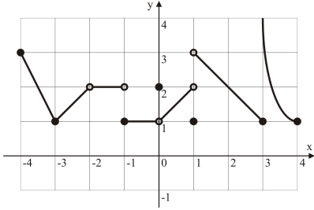

3.6 Factoring Polynomials
The Remainder Theorem
If a polynomial \(P(x)\) is divided by \((x-b),\ b \in \mathbb{R}\)
The remainder is \(r = P(b)\)
\(P(x) = (x-b)g(x) + r\)
\(P(b) = (b-b)g(x) + r = 0g(x) + r = r\)
Examples
\(P(x) = 2x^3 - 4x^2 + 3x - 6\)
a) \(x - 2\)
\(\qquad P(2) = 2(8) - 4(4) + 3(2) - 6 = 0 = r\)
\(r = 0,\> \therefore (x-2)\) is a factor of \(P(x)\)
b) \(x + 1\)
\(\qquad P(-1) = 2(-1) - 4(1) + 3(-1) - 6 = -15 = r\)
\(r = -15,\> \therefore (x+1)\) is not a factor of \(P(x)\)
When \(P(x) = x^3 - kx^2 + 17x + 6\) is divided by \((x-3)\), the remainder is 12. Find \(k\).
\(\qquad P(3) = 27 - k(9) + 17(3) + 6 = 12\)
\(9k = 27 + 51 - 6 = 72,\> \therefore k = 8\)
**Likely to be on test**
**When a polynomial \(P(x) = 3x^3 + cx^2 + dx - 7\) is divided by \((x-2)\), the remainder is \(-3\).
When \(P(x)\) is divided by \((x+1)\), the remainder is \(-18\). Find \(c\) and \(d\).
\(\quad①\quad P(2) = -3 = 24 + 4c + 2d - 7 \)
\(\quad②\quad P(-1) = -18 = -3 + c - d - 7 \)
\(\quad①+2\,②\quad -3 -18 = 24 - 6 + 6c + 2d - 2d - 7 - 14 \)
\(\qquad\qquad\qquad -21 = 18 + 6c - 21\)
\(\qquad\qquad\qquad -18 = 6c,\> c = -3\)
The Remainder Theorem
If \(\frac{P(x)}{(ax - b)}\) then \(r = P(\frac{b}{a})\)
\(P(x) = (ax-b)q(x) + r\)
\(P(\frac{b}{a}) = (a(\frac{b}{a})-b)q(x) + r = (b-b)q(x) + r = 0\times q(x) = r\)
\(P(x) = 2x^3 + 3x^2 - 7x - 3\)
Find \(r\) when \(P(x)\) is divided by \((2x + 5)\)
\(P(\frac{-5}{2}) = 2(\frac{-125}{8}) + 3(\frac{25}{4}) + 7(\frac{5}{2}) - 3\)
\(\frac{-125}{4} + \frac{75}{4} + \frac{35}{2} - \frac{6}{2}\)
\(\frac{-50}{4} + \frac{70}{2} - 3\)
\(\frac{(70-50)}{4} - 3 = \frac{20}{4} - 3\)
\(5-3 = 2,\> \therefore r = 2\)
The Factor Theorem
If \(\frac{P(x)}{(x-b)}\), then \(r = P(b)\)
\(P(b) = 0 \iff (x-b)\) is a factor of \(P(x)\).
Determine if:
a) \((x+2)\) is a factor of \(P(x) = x^3 + 5x^2 + 2x - 8\)
\(\qquad P(-2) = -8 + 20 - 4 - 8 = 0\)
\(\qquad\therefore (x+2)\) is a factor of \(P(x)\)
b) \((x^2-1)\) is a factor of \(P(x) = 2x^4 - 3x^3 - x^2 + 3x - 1\)
\(\qquad(x^2 - 1) = (x-1)(x+1)\)
\(\qquad(x^2-1)\) is a factor \(\iff (x-1)\) and \((x+1)\) are factors
\(\qquad P(1) = 2 - 3 - 1 + 3 - 1 = 0,\>\therefore (x+1)\) is a factor of \(P(x)\)
\(\qquad P(-1) = 2 + 3 - 1 - 3 - 1 = 0,\>\therefore (x-1)\) is a factor of \(P(x)\)
\(\qquad \therefore (x^2-1)\) is a factor of \(P(x)\)
Integral Zero Theorem
If \((x-b)\) is an \(integral\ zero\) of the polynomial \(P(x)\) with integer coefficients,
then \(b\) is a factor of the constant term \(a_0\)
\(P(x) = x^n + a_{n-1}x^{n-1}\ +\ ...\ a_0x + a_0\)
\(\ = (x-x_0)(x-x_1)...(x-x_n)\)
\((x-b)(x-x_2)...(x-x_n)\)
\(a_0 = bx_2x_3...x_n\)
Factor completely:
\(\qquad P(x) = x^4 - x^3 - 7x^2 + x + 6\)
\(\qquad Degree(P) = 4\), find \(4\) factors
\(\qquad P(1) = 1 - 1 - 7 + 1 + 6 = 0\)
\(\qquad P(1) = 0, \>\therefore x-1\) is a factor
\(\qquad P(-1) = 1 + 1 - 7 - 1 + 6 = 0\)
\(\qquad P(-1) = 0, \>\therefore x+1\) is a factor
\(\qquad P(2) = 16 - 8 - 28 + 2 + 6 = -12\)
\(\qquad P(2) = 0, \>\therefore x-2\) is not a factor
\(\qquad P(-2) = 16 + 8 - 28 - 2 + 6 = 0\)
\(\qquad P(-2) = 0, \>\therefore x+2\) is a factor
\(P(x) = x^4 - 2x^3 - x^2 + 4x - 2\)
\(\quad b = \pm1,\ \pm2\)
\(\quad P(1) = 1 - 2 - 1 + 4 - 2 = 0, \>\therefore x-1\) is a factor
\(\quad P(-1) = 1 + 2 - 1 - 4 - 2 = -4, \>\therefore x+1\) is not a factor
\(\quad P(2) = 16 - 16 - 4 + 8 - 2 = 2, \>\therefore x-2\) is not a factor
\(\quad P(-2) = 16 + 16 - 4 - 8 - 2 != 0, \>\therefore x+2\) is not a factor
Check for duplicate factors
Using Synthetic Division
\(P(x) = 2x^3 + 3x^2 - 3x - 2\)
If x-b is a factor, \(b = \pm1, \pm2\)
\(P(1) = 2 + 3 - 3 - 2 = 0\), therefore x-1 is a factor
Irrational something
\(P = a_nx^n + a_{n-1}x^{n-1}+...+a_1x + a_0\)
If there are rational zeros, the zeros of b/a are among a combination of:
\(b = \pm1, \pm2\)
\(\frac{b}{a}=\frac{\pm1,\pm2}{\pm1,\pm2,\pm3,\pm4,\pm6,\pm12}\)
-- = ---------------------------
= \(\pm1, \pm\frac{1}{2}, \pm\frac{1}{3}, \pm\frac{1}{4}, \pm\frac{1}{6}, \pm\frac{1}{12}\)
\(a = \pm1, \pm, ... \pm a_n\)
\(P(x) = 12x^4 - 4x^3 - 11x^2 + x + 2\)
Possible 0s:
\(b = \pm1, \pm2\)
\(\frac{b}{a}=\frac{\pm1,\pm2}{\pm1,\pm2,\pm3,\pm4,\pm6,\pm12}\)
= \(\pm1, \pm\frac{1}{2}, \pm\frac{1}{3}, \pm\frac{1}{4}, \pm\frac{1}{6}, \pm\frac{1}{12}\)
= 2, -2, 2/3, -2/3
P(1) = 12 - 4 - 11 + 1 + 2 = 0, therefore (x-1) is a factor
P(-1) = 12 + 4 - 11 - 1 + 2 != 0, therefore (x+1) is not a factor
P(2) = 12(16) - 32 - 11(4) + 2 + 2 != 0, therefore (x-2) is not a factor
P(-2) = 12(16) + 32 - 11(4) - 2 + 2 != 0, therefore (x+2) is not a factor
P(1/2) = 12/16 + 4/8 - 11/4 - 1/2 + 2 = 3/4 + 2/4 - 11/4 - 2/4 + 8/4 = 0, therefore (2x-1) is not a factor
Repeated Synthetic Division
1 | 12 -4 -11 1 2
__|__12_8_-3_-2
1/ | 12 8 -3 -2 0
2 | 6 7 -3 1
__|__12
_ | 12
3.4 Transformations of Power Functions (Cubic, Quartic, and Other)
\(f(x) = (x+2)^3 + 8\)
\((x+2)^3 + 8 = 0\)
\(\sqrt[3]{(x+2)^3} = \sqrt[3]{-8}\)
\(x = -2\)
\(y\!\!-\!\!intercept = f(0) = 16\)
\(f(x) = -(2x-1)^4 + 16\)
\(\phantom{f(x)} = -[\,2\,(x-\frac{1}{2})\,]^4 + 16\)
\(\phantom{f(x)} = -16(x-\frac{1}{2})^4 + 16\)
\(x\!\!-\!\!intercept\)
\(\phantom{-1}0 = -16(x-\frac{1}{2})^4 + 16\)
\(-16 = -16(x-\frac{1}{2})^4\)
\(\phantom{-1}1 = (x-\frac{1}{2})^4\)
6. a) \(f(x) = x^2\ \sqrt[3]{x-1}\)
\(\phantom{\text{6. a)}} f(x) \rightarrow x^\frac{7}{3}\)
\(\phantom{\text{6. }}\)b) \(f(x) = x^\frac{1}{3}(x-8)^\frac{2}{3}\)
oblique asymptote / slant asymptote
Factoring \(x^n\)
\(f(x) = x^n - 1\)
\(\quad n=odd: b = \pm1\)
\(\quad\ \phantom{n=odd: } f(1) = 0\)
\(\quad\ \phantom{n=odd: } f(-1) \neq 0\)
\(1 | 1 0 0 ... 0 -1\)
1 | 1 0 0 ... 0 -1 | 1 1 ... 1 1 --+--------------------------- | 1 1 1 ... 1 0\(x^n-1 = (x-1)(x^n-1 + x^n-2 + ... x + 1)\)
\(\quad n=even: b = \pm1\)
\(\quad\ \phantom{n=even: } f(1) = 0\)
\(\quad\ \phantom{n=even: } f(-1) = 0\)
1 | 1 0 0 0 ... 0 -1 | 1 1 1 ... 1 1 ---+--------------------------- -1 | 1 1 1 1 ... 1 0 | -1 0 -1 ... -1 ---+--------------------------- | 1 0 1 0 ... 0 (dropped 0 because factored an x out)
\( \longdiv[x=1]{x^3+x^2-1} \)
Solving Polynomial Equations
Polynomial equation is defined as \(P(x)=0\)
Show that \(\sqrt{3}\) is a solution to \(P(x)=x^4+9=6x^2\)
\(P(\sqrt{3})=x^4-6x^2+9=0\)
\(\sqrt{3}^4 - 6\sqrt{3}^2 + 9 = 9 - 6\times3 + 9 = 0\)
Grouping
\(P(x)=8x^3-12x^2-2x+3=0\)
\(\phantom{P(x)}=4x^2(2x-3)-(2x-3)\)
\(\phantom{P(x)}=(4x^2-1)(2x-3)\)
\(\phantom{P(x)}=(2x-1)(2x+1)(2x-3)\)
\(x=\frac{-1}{2},\frac{1}{2},\frac{3}{2}\)
Integral Zero Theorem
\((x^2-13)x=15-3x^2\)
\(x^3+3x^2-13x-15=0\)
\(b=\frac{a_0}{a_n}=\pm1,\pm3,\pm5,\pm15\)
\(P(x)=(x+1)(x^2+2x-15)\)
\(\phantom{P(x)}=(x+1)(x-3)(x+5)\)
Rational Zero Theorem
Cannot use integral zero theorem if coefficients of \(P(x)\) are not integers
Prep \(P(x)\) by multiplying all coefficients to get integers
\(3x^4+\frac{7}{2}x^3-\frac{2}{3}x^2-\frac{3}{2}x-\frac{1}{3}=0\quad\) multiply by 6
\(18x^4+21x^3-4x^2-9x-2=0\)
Is \(-\frac{2}{3}\) a possible rational zero of \(P(x)=2x^3+\>...\,+-8\)?
Non-Rational Zeros
Must show up as conjugate pairs
\(x^4-2x^3-4x^2+6x+3=0\)
\(x=1+\sqrt{2},\ \therefore x=1-\sqrt{2}\)
\((x-1-\sqrt{2})(x-1+\sqrt{2})=[(x-1)^2-2]=x^2-2x-1\)
What is IVT
\(x^3+x-1=0\)
We know the behaviour of \(x^3+x\), -1 shifts zeros away from origin
Solving Polynomial Inequalities
\(P(x)\leq0\)
\(P(x)=x^2-4\)
\(\phantom{P(x)}=(x+2)(x-2)\leq0\)
\(x\in[-2,2]\)
Using a Sign Chart
\( \begin{array}{c|c|c|c} \hline x+2 & - & + & +\\\hline x-2 & - & - & +\\\hline (x+2)(x-2) & + & - & + \end{array} \)
\( \begin{array}{c|c|c|c} \hline x & - & + & +\\\hline x-1 & - & - & +\\\hline x(x-1) & + & - & + \end{array} \)
Solve \((x^2-x-2)(x^2+1)(x-3)^3\geq0\)
\(x^2 + 1\) is always positive
\((x-2)(x+1)(x^2+1)(x-3)^3\geq0\)
\( \begin{array}{c|c|c|c|c} \hline x+1 & - & + & + & +\\\hline x-2 & - & - & + & +\\\hline (x-3)^3 & - & - & - & +\\\hline (x-2)(x+1)(x^2+1)(x-3)^3 & - & + & - & + \end{array} \)
\(x\in[-1,2]\cup[3,\infty)\)
\(x^2(x-2)(x+2)(x+1) > 0\)
Sketch:

\(x\in(-2, -1)\cup(-2,\infty)\)
\(x(x-1)(x+2)\gt0\)

\(x\in(-2, 0)\cup(1,\infty)\)
\((x^4-1)(x^2-9)\leq0\)
\((x-1)(x+1)(x^2+1)(x-3)(x+3)\)

\(x\in(-\infty,-3]\cup[-1,1]\cup[3,\infty)\)
\(P(x)=(x+1)^2\leq(x-2)^3+5\)
\(\phantom{P(x)=}x^2+2x+1\leq x^3-6x^2+12x-8+5\)
\(\phantom{P(x)=}x^3-7x^2+10x-4\geq0\)
Reduced Quadratic Formula
\(ax^2+bx+c=0\)
\(x=\frac{-b\pm\sqrt{b^2-4ac}}{2a}\)
\(ax^2+2b'x+c=0\)
\(x=\frac{-2b'\pm\sqrt{2b'^2-4ac}}{2a}\)
\(\phantom{x}=\frac{-2b'\pm2\sqrt{b'^2-ac}}{2a}\)
\(\phantom{x}=\frac{-b'\pm\sqrt{b'^2-ac}}{a}\)
\((x-1)(x-3-\sqrt{5})(x-3+\sqrt{5})\geq0\)

\(x\in[3-\sqrt{5}, 1]\cup[3+\sqrt{5},\infty)\)
\((x-1)^4+8x\gt4(x^2+1)\)
\((x-1)^4+8x-4(x^2+1)\gt0\)
\(x^4-4x^3+6x^2-4x+1+8x-4x^2-4\gt0\)
\(x^4-4x^3+2x^2+4x-3\gt0\)
\(P(x)=(x-1)^2(x+1)(x-3)\)
\( \begin{array}{c|c|c|c|c} \hline x+1 & - & + & + & +\\\hline x-2 & - & - & + & +\\\hline (x-3)^3 & - & - & - & +\\\hline (x-2)(x+1)(x^2+1)(x-3)^3 & - & + & - & + \end{array} \)
Graphs of Reciprocal Functions
\(a\) is a reciprocal of \(b\) such that \(a\cdot b = 1,\ b=\frac{1}{a}\)
\(f(x)\cdot g(x)=1,\ g(x)=\frac{1}{f(x)}\)
\(f(x)\) and \(g(x)\) share sign, even/odd parity
As \(f(x)\) increases, \(g(x)\) decreases
If \(f(x)\) has a local max, \(g(x)\) has a local min at \(\frac{1}{f(x)}\)
y-intercept of \(g(x)\) = \(\frac{1}{f(x)}\)
\(y=\frac{1}{x},\ y=x\)
Points on both: \((-1, -1), (1, 1)\)
\(y=x^2,\ \frac{1}{x^2}\)
Points on both: \((-1, -1), (1, 1)\)
| | | | | \ ; | ; / \ .` | `. / ___--``-.___|___.-``--___ ------------+------------ | | |\(y=x^2,\ \frac{1}{x^2}\)
Points on both: \((-1, -1), (1, 1)\)
. | || | | `_ | || \| \ \ / | X_ \ X | | `--__ -----|--*-\-+-----/-------- \| \| ^ / X |( )/ |\ /'_'\ | \ || |\(y=2x-4,\ y=\frac{1}{2x-4}\)
Points on both: \((-1, -1), (1, 1)\)
Points on both: \((2x-4)^2=1\)
Points on both: \(2x-4=\pm1\)
Points on both: \(2x=5,\ 3\)
Points on both: \(x=\frac{5}{2},\ \frac{3}{2}\)
\((\frac{5}{2}, 1),\ (\frac{3}{2}, -1)\)
| | / | \ / | \/ | /`'=-..__ ------------+--#----------- ```''--|_/ (2,0) |/. / \ /| |\(y=x^2+2,\ y=\frac{1}{x^2+2}\)
Points on both: \((-1, -1), (1, 1)\)
\ | / \ | / '_ | _' '+' | ____.....---+---.....______ ------------+-------------- | | | |\(y=x^2,\ y=\frac{1}{x^2}\)
Points on both: \((-1, 1), (1, 1)\)
| ||| | \ / | \ / \/ | \/ _____..-``. | ,``-.._____ -----------`+`------------- | | | |\(y=(x-1)(x+2)\)
Vertex x = \(-\frac{1}{2}\)
| | | \ | / | (-2, 0)| | \ | / (2, 0) -------+------+--+--------- \ | / \ | / `. |` (0, -2) (-11/2, -9/4) `-`|Features of a Reciprocal Function
Rational Functions
Rational function: ratio between two polynomials \(f(x) = \frac{P(x)}{Q(x)}\)
\(tan(x)=\frac{sin(x)}{cos(x)}\) trigonometric rational function
a) \(f(x)=\frac{x^2-x+2}{x^2-1}\): rational function
b) \(f(x)=\frac{x}{\sqrt{x}+x^2}\): not a rational function
c) \(f(x)=x^{-2}+\frac{1}{x}=\frac{1+x}{x^2}\): rational function
Domain of Rational Functions
Always find domain
\(f(x)=\frac{x^2-1}{x-1}\)
Domain: \(D_f=\{x\in\mathbb{R} | x\neq1\}\)
\(f(x)=\frac{x+1}{x^2-4}\)
Domain: \(D_f=\{x\in\mathbb{R} | x\neq\pm2\}\)
\(f(x)=\frac{x^2-x}{6x^3+x^2-2x}=\frac{x^2-x}{x(2x-1)(3x+2)}\)
Domain: \(D_f=\{x\in\mathbb{R} | x\neq0,\,\frac{1}{2},\,-\frac{2}{3}\}\)
y-intercept Point
y-intercept for any function \(y=f(x)\) is at \((0, f(0))\) only of 0 is in \(D_f\)
\(f(x)=\frac{x^2+1}{x}\); \(D_f=\{x\in\mathbb{R} | x\neq0\}\): \(f(x)\) has no y-intercept
Holes
A hole exists in \(f(x)=\frac{P(x)}{Q(x)}\) at \(x=a\) if \(P(a)=0\) and \(Q(a)=0\) and if the simplified formula for \(f(x)\) becomes \(x=a\)
a) \(f(x)=\frac{x^2}{x}\); \(D_f=\{x\in\mathbb{R} | x\neq0\}\)
\(f(x)=x,\ x\neq0\); Simplified, \(f(0)=0\), therefore there is a hole at \((0,0)\)
b) \(f(x)=\frac{x^2}{x^4}\); \(D_f=\{x\in\mathbb{R} | x\neq0\}\)
\(f(x)=\frac{1}{x^2}, x\neq0\); Simplified, \(f(0)\) is defined, therefore there is a vertical asymptote at \(x=0\)
c) \(f(x)=\frac{x^2-4}{x+2}\); \(D_f=\{x\in\mathbb{R} | x\neq -2\}\)
\(f(x)=x-2, x\neq -2\); Simplified, \(f(x)\) is defined at \(x=-2\), therefore there is a hole at \((-2,\ \text{simplified} f(-2)) = (-2, -4)\)
d) \(f(x)=\frac{x^3-1}{x-1}\); \(D_f=\{x\in\mathbb{R} | x\neq1\}\)
\(f(x)=\frac{(x-1)(x^2+x+1)}{x-1}=x^2+x+1,\ x\neq1\); Simplified, \(f(x)\) is defined at \(x=1\), therefore there is a hole at \((1, \text{simplified} f(1))=(1, 3)\)
Zeros (x-intercepts)
Rational function \(f(x)=\frac{P(x)}{Q(x)}\) has zeros at \(x=a\) if \(P(a)=0\) and \(Q(a)\neq0\)
a) \(f(x)=\frac{x-1}{x^2-1}\); \(D_f=\{x\in\mathbb{R} | x\neq\pm1\}\)
\(f(x)=\frac{x-1}{(x-1)(x+1)}=\frac{1}{x-1}, x\neq\pm1\); zeros of \(P(x)\) are not in \(D_f\), therefore \(f(x)\) has no zeros
\(f(x)\) has a hole at \((1, \frac{1}{2})\), and a vertical asymptote at \(x=-1\)
c) \(y=\frac{x^2+1}{x-1}\); \(D_f=\{x\in\mathbb{R} | x\neq1\}\)
zeros of \(x^2+1=\pm i\), therefore y has no real x-intercepts
Vertical Asymptotes
\(x=a\) is considered a vertical asymptote if as \(x\) approaches \(a\), \(y\) becomes unbounded (\(y=f(x)\rightarrow\pm\infty\))
\(x\rightarrow a^-\quad y\rightarrow +\infty\)
\(x\rightarrow a^+\quad y\rightarrow -\infty\)
If \(x=a\) is a vertical asymptote for \(f(x)=\frac{P(x)}{Q(x)}\)
7. a) \(f(x)=\frac{x}{x^2+1}\); \(D_f=\{x\in\mathbb{R}\}\)
y-intercept: \(\frac{0}{1}=(0, 0)\)
x-intercept: \((0, 0)\)
Parity: \(f(x)\) is an odd function as \(f(-x)=-f(x)\)
Horizontal asymptotes: \(x\rightarrow \pm\infty,\ y=0\)
Vertical asymptotes: As \(x\rightarrow a^-,\ y\rightarrow\pm\infty\); as \(x\rightarrow a^-,\ y\rightarrow\pm\infty\)
|
|
| _,=''=_
|/ ``---....___
------------+--------------
--..,__ /|
`=..='` |
|
|
b) \(f(x)=\frac{x+3}{x^2-x-6}\); \(D_f=\{x\in\mathbb{R} | x\neq -2, 3\}\): vertical asymptotes at \(x=-2, x=3\)
\(f(x)=\frac{x+3}{(x+2)(x-3)}\)
As \(x\rightarrow -2^-: \frac{-2.001+3}{(-2.001-3)(-2.001+2)}=\frac{+}{(-)(-)}\), therefore \(y\rightarrow +\infty\)
As \(x\rightarrow -2^+: \frac{-1.999+3}{(-1.999-3)(-1.999+2)}=\frac{+}{(-)(+)}\), therefore \(y\rightarrow -\infty\)
As \(x\rightarrow 3^-: \frac{2.999+3}{(2.999-3)(2.999+2)}=\frac{+}{(-)(+)}\), therefore \(y\rightarrow -\infty\)
As \(x\rightarrow 3^+: \frac{3.001+3}{(3.001-3)(3.001+2)}=\frac{+}{(+)(+)}\), therefore \(y\rightarrow +\infty\)
VA: x=-2 VA: x=3
|| | ||
/| | |\
(-3,0)/ | | | `--....___
---*--|-----+--------|------------
`''-._/ | _-*(0,-1/2)|
| / | `. |
| / | \ |
NOTE: When checking for signs on either side of vertical asymptotes, the signs will be opposite if the multiplicity of the zero in the denominator is odd, and the signs will be equal when the multiplicity of the zero is even.
NOTE: Multiplicity of the zero in the numerator dictates the behaviour of the curve at that 0 as if it was a regular polynomial.
c) \(f(x)=\frac{x^3-1}{x^2-1}=\frac{(x-1)(x^2+x+1)}{(x+1)(x-1)}\): \(D_f=\{x\in\mathbb{R} | x\neq1, -1\}\)
\(f(x)=\frac{(x-1)(x^2+x+1)}{(x+1)(x-1)}=\frac{(x^2+x+1)}{x+1},\ x\neq\pm1\), hole at (1, \frac{3}{2})
Vertical asymptotes: \(x=-1\)
As \(x\rightarrow -1^-: \frac{-1.001^2-1.001+1}{-1.001+1}=\frac{+}{-}\), therefore \(y\rightarrow -\infty\)
As \(x\rightarrow -1^+: \frac{-0.999^2-0.999+1}{-0.999+1}=\frac{+}{+}\), therefore \(y\rightarrow +\infty\)
\(y=f(x)=\frac{P(x)}{Q(x)}=\frac{a_nx^n + a_{n-1}x^{n-1}+...+a_1+a_0}{b_mx^m + b_{m-1}x^{m-1}+...+b_1+b_0}\)
\(\phantom{y=f(x)=\frac{P(x)}{Q(x)}}=\frac{a_nx^n + (1 + \frac{a_{n-1}}{a_n}\frac{1}{x}+...+\frac{a_1}{a_n}\frac{1}{x^{n-1}} + \frac{a_0}{a_n}\frac{1}{x^n})} {b_mx^m + (1 + \frac{b_{m-1}}{b_m}\frac{1}{x}+...+\frac{b_1}{a_m}\frac{1}{x^{m-1}} + \frac{b_0}{b_m}\frac{1}{x^m})}\)
As \(|x|\rightarrow +\infty \quad y\rightarrow\frac{a_n}{b_m}x^{n-m}\)
1) if \(n=m \quad y=\frac{a_n}{b_m}\)
2) if \(n\lt m \quad y\rightarrow0\)
3) if \(n\gt m \quad y\) becomes unbounded
a) \(f(x)=\frac{x^2-2x+1}{3x^3-3x+5}\): \(y\rightarrow\frac{x^2}{3x^3}: n\lt m\), therefore horizontal asymptote at \(y=0\)
b) \(f(x)=\frac{2x^2}{x+1}\): \(y\rightarrow\frac{2x^2}{x+1}: n\gt m\), therefore no horizontal asymptotes
c) \(f(x)=\frac{x^2-2x+1}{3x^3-3x+5}\): \(y\rightarrow\frac{x^2}{3x^3}: n\lt m\), therefore horizontal asymptote at \(y=0\)
8. Sketch:
a) \(f(x)=\frac{x-1}{x^2-1}=\frac{x-1}{(x-1)(x+1)}: D_f=\{x\in\mathbb{R} | x\neq1, -1\}\)
\(f(x)=\frac{x-1}{(x-1)(x+1)}=\frac{1}{x+1}, x\neq\pm1\)
Hole at \(x=1: (1, \frac{1}{2})\)
Vertical asymptotes: \(x=-1\)
As \(x\rightarrow -1^-: \frac{-1.001-1}{(-1.001-1)(-1.001+1)}=\frac{-}{(-)(-)}\), therefore \(y\rightarrow -\infty\)
As \(x\rightarrow -1^+: \frac{-0.999-1}{(-0.999-1)(-0.999+1)}=\frac{-}{(-)(+)}\), therefore \(y\rightarrow +\infty\)
Horizontal asymptotes: \(f(x)\rightarrow\frac{x}{x^2}\rightarrow\frac{1}{x}\), therefore \(x\rightarrow0\)
Crosses HA? \(\frac{1}{x+1}=0,\ x\) does not exist, therefore does not cross HA
x-intercepts: none
y-intercept: (0, 1)
VA: x=-1
|\ |
| '._|
| *(0, 1)
| | `()..____
------------|----+-------------
`````''-. | | hole at (1, 1/2)
\| |
|| |
Oblique Asymptotes
\(f(x)=\frac{P(x)}{Q(x)},\ degree(P) - degree(Q) = 1 = ax+b+\frac{r(x)}{Q(x)}\)
Quotient = linear function
As \(x\rightarrow\pm\infty: \lim_{|x|\to\infty} (ax+b)\): unbounded along \(ax + b\)
Therefore \(ax + b\) is the oblique asymptote
7. Graph
a) \(\frac{x^2}{4-x^2}=\frac{x^2}{(2-x)(2+x)}\): \(D_f=\{x\in\mathbb{R} | x\neq\pm2\}\)
\(\frac{x^2}{(2-x)(2+x)}=\)
\(\)
c) \(\frac{x^2-2x}{x+1}=\frac{x(x-2)}{x+1}\): \(D_f=\{x\in\mathbb{R} | x\neq-1\}\)
Vertical asymptotes: \(x=-1\): \(x\to-1^-: \frac{-1.0001(-1.0001 - 2)}{(-0.001)} = \frac{+}{-}\), therefore \(y\to\-\infty\)
\(\frac{x(x-2)}{x+1}\)
x - 3 .__________ x+1 \|x^2 - 2x x^2 + x ---------- -3x -3x - 3 ------- 3\(\frac{x(x-2)}{x+1}=x-3+\frac{3}{x+1}\), therefore oblique asymptote = \(y=x-3\)
|| | .' _-`
|| | .` .'
|\ | : _-` y = x-3
| \ | /.'
--------|--`+_/`-----------
| .|`
|-` |
.'| |
.'^.| |
.'.` || |
.' / || |
.' / || |
8. Graph.
\(y=\frac{(1-x^2)(x-2)}{x^2(x+2)^2(x^2+x-2)}=-\frac{(x-1)(x+1)(x-2)}{x^2(x+2)(x+2)(x+2)(x-1)}\): \(D_f=\{x\in\mathbb{R} | x\neq0,-2,1\}\)
\(y=-\frac{(x-1)(x+1)(x-2)}{x^2(x+2)^3(x-1)}=-\frac{(x+1)(x-2)}{x^2(x+2)^3},\ x\neq0, -2, 1\)
Hole at (1, 2/27)
Vertical asymptotes: \(x=-2, 1, 0\)
VA: \(x=-2\)
\(x\to-2^-: -\frac{+}{-}: y\to+\infty\)
\(x\to-2^+: -\frac{+}{+}: y\to-\infty\)
VA: \(x=0\)
\(x\to0^-: -\frac{-}{+}: y\to+\infty\)
\(x\to0^+: -\frac{-}{+}: y\to+\infty\)
VA: \(x=1\)
\(x\to-1^-: -\frac{+}{+}: y\to-\infty\)
\(x\to-1^+: -\frac{-}{+}: y\to+\infty\)
no y-intercept
x-intercepts: (-1, 0), (2, 0)
odd degree, opposite inf sign
VA: x=-2, x=0
|| |||
/| |||
/ | /|\
__..-` | | | \
--------|--/-+--\------------ y=0
| | | `-..___,.--'''
| / |
|| |
|| |
\(\frac{1}{x-1}\leq\frac{1}{x},\ x\neq0, 1\)
\(\frac{1}{x-1}-\frac{1}{x}\leq0\)
\(\frac{x-x+1}{x(x-1)}\leq0\)
\(\frac{1}{x(x-1)}\leq0\)
2. a) \(\frac{x+1}{x-1}\geq0\)
\(\)
2. b) \(\frac{x^2-1}{x-2}\geq0\)
\(\frac{(x-1)(x+2)}{x-2}\geq0,\ x\neq2\)
\(x(x-1)\leq0,\ x\neq0,1\)
\ /
---------o---------o---------
`'=---='`
_,---._
/ \ /
---------o---------o------o--
/ `-..-'
\(\quad x\in(-\infty, 1] \cup [1, 2)\)
2. d) \(\frac{x^3+1}{x^3-1}\lt0\)
\(\frac{(x+1)(x^2+x+1)}{(x-1)(x^2-x+1)}\lt0\)
\((x^2+x+1),\ (x^2-x+1)\) unfactorable, always above x-axis, no roots, never less than 0
\((x+1)(x-1)\lt0\)
3. a) \(\frac{1}{x-1}\gt\frac{1}{x+1}\)
\(\frac{1}{x-1} - \frac{1}{x+1}\gt0\)
\(\frac{x+1-x+1}{(x+1)(x-1)}\gt0\)
\(\frac{2}{(x+1)(x-1)}\gt0\)
\(2(x-1)(x+1) > 0, x\neq\pm1\)
\(2(x^2-1) > 0, x\neq\pm1\)
\(\therefore x\in(-\infty, -1)(1, +\infty)\)
3. b) \(4x - \frac{5}{x-1} \geq 2x - 1\)
\(4x - 2x - \frac{5}{x-1} + 1\geq0\)
\(2x - \frac{5}{x-1} + 1\geq0\)
\(\frac{2x^2-2x-5+x-1}{x-1}\geq0\)
\(\frac{2x^2-x-6}{x-1}\geq0\)
\(\frac{(2x-3)(x+2)}{x-1}\geq0, x\neq1\)
\((2x-3)(x+2)(x-1)\geq0, x\neq1\)
_.-'``'-_ / ------o---------o--------o------ / `-.__.-`
\((2x-3)(x+2)(x-1)\geq0, x\neq1\)
3. c) \(\frac{4x+5}{x^2}\geq\frac{4}{x+5}\)
\(\frac{4x+5}{x^2}-\frac{4}{x+5}\geq0\)
\(\frac{4x^2+5x+20x+25-4x^2}{(x^2)(x+5)}\geq0\)
\(\frac{25x+25}{x^2(x+5)}\geq0\)
\(\frac{25(x+1)}{x^2(x+5)}\geq0, x\neq0,-5\)
\(25(x+1)x^2(x+5)\geq0, x\neq0,-5\)
------o---------o--------o------
\(\therefore x\in(-\infty, -5)\cup() \)
3. d) \(\frac{x}{2x-4}-\frac{3}{x-6}\leq\frac{1}{2}\)
\(\frac{x}{2x-4}-\frac{3}{x-6}-\frac{1}{2}\leq0\)
\(\frac{x}{2(x-2)}-\frac{3}{x-6}-\frac{1}{2}\leq0\)
\(\frac{x^2-6x-6x-12-(x-2)(x-6)}{2(x-2)(x-6)}\leq0\)
\(\frac{x^2-6x-6x-12-x^2+8x+12}{2(x-2)(x-6)}\leq0\)
\(\frac{-4x}{2(x-2)(x-6)}\leq0\)
\(\frac{-2x}{(x-2)(x-6)}\leq0\)
\(-2x(x-2)(x-6)\leq0\)
\(2x(x-2)(x-6)\geq0\)
\(\therefore x\in(-\infty, 2)\cup(6, +\infty)\)
\(\frac{x}{x-2}+\frac{1}{x-4}\geq\frac{2}{x^2-6x+8}\)
\(\frac{x}{x-2}+\frac{1}{x-4}-\frac{2}{(x-4)(x-2)}\geq0\)
\(\frac{x^2-4x+x-2-2}{(x-4)(x-2)}\)
\(\frac{x^2-3-4}{(x-4)(x-2)}\)
\(\frac{(x-4)(x+1)}{(x-4)(x-2)}\)
\(\frac{(x+1)}{(x-2)}, x\neq4,2\)
(x+1)(x-2)\geq0
\(\therefore x\in(-\infty, -1]\cup(2, 4)\cup(4, -infty)\)
Double Inequalities
5. \(\frac{5}{x}\leq\frac{6}{x-1}\leq\frac{x}{x-2}\)
\(\frac{5}{x}\leq\frac{6}{x-1}\) AND \(\frac{6}{x-1}\lt\frac{x}{x-2}\)
\(\frac{5}{x}\leq\frac{6}{x-1}\)
\(\frac{5}{x}-\frac{6}{x-1}\leq0\)
\(\frac{5x-5-6x}{x(x-1)}\leq0\)
\(\frac{-x-5}{x(x-1)}\leq0\)
\(\frac{x+5}{x(x-1)}\geq0, x\neq0,1\)
\((x+5)x(x-1)\geq0, x\neq0,1\)
_.='`'=._ /
---------o---------o--------o--------
/ `-.__.-`
\(\therefore x\in[]\)
\(\frac{6}{x-1}\lt\frac{x}{x-2}\)
\(\frac{6}{x-1}-\frac{x}{x-2}\lt0\)
\(\frac{6x-12-x^2-x}{(x-1)(x-2)}\lt0\)
\(\frac{x^2-7x-12}{(x-1)(x-2)}\lt0\)
\(\frac{(x-3)(x-4)}{(x-1)(x-2)}\lt0, x\neq1,2,3,4\)
\((x-3)(x-4)(x-1)(x-2)\lt0, x\neq1,2,3,4\)
_.--._
\ 1 2 / \ 3 4 /
---------o---------o--------o-------o--------
`-.___.-` `.___.`
\(\therefore x\in(-\infty, 1)\cup(2,3)\cup(4,+\infty)\)
\(\therefore x\in[-5, 0)\cup(2,3)\cup(4,+\infty)\)
6. \(\frac{1}{|x-1|}-\frac{|x+1|}{x}\leq2\)
Exploring Logarithmic Functions
\(f(x)=b^x, b\gt0,\ b\neq1,\ then\ f^-1(x)=\log_b x\)
\(D=\{x\in\mathbb{R}\}\)
\(R=\{y\in\mathbb{R} | y\gt0\}\)
\(b\gt0\): negative bases lead to all sorts of problems, e.g. x=1/2; (-|n|)^1/2 = sqrt(-)
\(b\neq1\): y=1^x is not an exponential function, it is constant
KEY POINTS: \((-1, \frac{1}{b}),\ (0, 1),\ (1, b)\)
Exponential functions grow at faster rates than \(x^n\)
as \(x\to-\infty,\ y\to0^+\)
as \(x\to+\infty,\ y\to\infty\)
\(y=b^x\ (0\lt b\lt1)\) = flipped over y-axis
Inverse
\(f(x)=y=b^x\)
\(D_{f^{-1}}: \{x\in\mathbb{R} | x\gt0\}\)
\(R_{f^{-1}}: \{y\in\mathbb{R}\}\)
VA at \(x=0\)
as \(x\to0^+,\ y\to-\infty\)
\(f^{-1}(x)=\log_b x,\ b\gt0,\ b\neq1,\ x\gt0\)
\(y=b^x\iff x=\log_b y\)
\(8=2^3\iff 3=\log_2 8\)
\(0.0001=10^{-4}\iff -4=\log_{10} 0.0001\)
\(10000 = 10^4\iff \log_{10} 10000\)
\(1024=2^{10}\iff10=\log_{2} 1024\)
\(\log_{10}=\log\)
\(\ln x=\log_{e} x\)
\(y=e^x,\ x=\ln y\)
\(4=\log_2 16\iff16=2^4\)
\(3=\log_10 1000\iff1000=10^3\)
\(-4=\log_10 0.0001\iff0.0001=10^{-4}\)
\(4=\log_5 625\iff625=5^4\)
3. Find if the functions are well defined
a) \(\log_\sqrt{2} 1=\sqrt{2}^x, x=0\): well defined
b) \(\log_1 2\): base is 1, not well defined
c) \(\log_{\frac{1}{2}} \sqrt{2}=\frac{1}{2}^x = \sqrt{2}, \): well defined
d) \(\log_2 -10\): output is negative, not well defined
e) \(\log_-2 3\): base is negative, not well defined
4. Prove following formulas
a) \(\log_b 1 = 0,\ b^0 = 1\)
b) \(\log_b b = 1,\ b^1 = b\)
c) \(\log_b \frac{1}{b} = -1,\ b^{-1} = \frac{1}{b}\)
d) \(\log_{\frac{1}{b}} b = -1,\ \frac{1}{b}^{-1} = b\)
e) \(\log_b b^n = n,\ b^n = b^n\)
Basic Equations
5. Solve by converting to exponential form
a) \(x=\log_5 25,\ 5^x=25,\ 5^x=5^2,\ x=2\)
b) \(x=\log_4 1,\ 4^x=1,\ 4^x=4^0,\ x=0\)
c) \(2=\log_x 16, x\gt0, x\neq1;\ x^2=16,\ x=\pm4; (restrictions)\to x=4\)
d) \(\frac{1}{2}=\log_x 3, x\gt0, x\neq1;\ x^\frac{1}{2}=3,\ x=\pm9; (restrictions)\to x=9\)
e) \(\log_2 x = -2, x\gt0, 2^-2=x, x=\frac{1}{4}\)
Sketching Logarithmic Functions
\(y=\log_b x\ (0\lt b\lt1)\)
| | \ | `. | `=~-.|____________ ----------------+----------------- | | | |Transformations of Logarithmic Functions
\(y=-\log_2 (x-3)\)
Parent: \(y=\log_2 x\)
Transformation: \((x+3, -y)\)
\(y=-2\log_{0.5} (2x-4)+3\)
\(\phantom{y}=-2\log_\frac{1}{2} [2(x-4)]+3\)
Parent: \(y=\log_\frac{1}{2} x\)
Transformation: \((\frac{x}{2}+2, -2y+3)\)
\(f(x)=y=\log_2 x\): Parent
\(g(x)=y=\log_2 |x|\): \(f(x)\) is duplicated across the y-axis (keeping VA at x = 0)
\(h(x)=y=|\log_2 x|\): \(f(x)\) but any negatives turn positive
Evaluating Logarithms
\(y=b^x \iff x=\log_b y\)
\(b^n=b^n\)
\(b^n=x \rightarrow \log_b x=n\)
\(\log_b b^n=n\)
\(\ln sqrt[5]{e^3}=ln^\frac{3}{5}=\frac{3}{5}\)
\(e^1=1+\frac{1}{1!}+\frac{1}{2!}+\frac{1}{3!}+...\)
\(b^m\cdot b^n = b^{m+n}\)
\(\frac{b^m}{b^n} = b^{m-n}\)
\((b^m)^n=b^{m\cdot n}\)
\(b^{-1}=\frac{1}{b}\)
\(\phantom{b^{-1}}=\frac{b^0}{b^1}\)
\(\phantom{b^{-1}}=b^{0-1}\)
\(\phantom{b^{-1}}=b^{-1}\)
Proofs
The Power Rule
\(\log_b x^n = n \log_b x\); \(x\gt0,\ b\gt0,\ b\neq1\)
Let \(m=\log_b x \leftrightarrow\ x=b^m\)
\(x=b^m\)
The Product Rule
\(\log_b (xy) = \log_b x + \log_b y\); \(x\gt0, y\gt0, b\gt0, b\neq1\)
Let \(m=\log_b x \leftrightarrow x=b^m\)
Let \(n=\log_b y \leftrightarrow y=b^n\)
The Quotient Rule
\(\log_b (\frac{x}{y}) = \log_b x - \log_b y\); \(x\gt0, y\gt0, b\gt0, b\neq1\)
Let \(m=\log_b x \leftrightarrow x=b^m\)
Let \(n=\log_b y \leftrightarrow y=b^n\)
LS = RS, \(\therefore \log_b \frac{x}{y} = \log_b x - \log_b y\)
The Change of Base Rule
\(\log_b x = \frac{\log_a x}{\log_a b}\); \(x\gt0, b\gt0, b\neq1, a\gt0, a\neq1\)
Let \(m=\log_a x \leftrightarrow x=a^m\)
Let \(n=\log_a b \leftrightarrow y=a^b\)
LS = RS, \(\therefore \log_b x = \frac{\log_a x}{\log_a b}\)
The Change of Base of an Exponent Rule
\(2=3^?\)
\(10^?=e\)
\(e^?=10\)
\(b^n = b^n\)
\(\log_b n = \log_b n\)
\(n = b^{\log_b n}\)
\(2=3^{\log_3 2}\)
\(e=10^{\log e}\)
\(10=e^{\ln 10}\)
\(\frac{1}{2}=e^{\ln \frac{1}{2}}\)
Practice
3. Simplify, state restrictions
a) \(\log x^2 = 2\log x, x\gt0\)
b) \(\ln \sqrt[5]{x^4} = \frac{4}{5}\log x, x\gt0\)
c) \(\log_2 x^\frac{1}{3} = \frac{1}{3}\log_2 x, x\gt0\)
5. Power law/product law to exapand; state restrictions
a) \(\log(10xy) = \log(10) + \log x + \log y\)
b) \(\log_2(16a^2b^3) = \log_2(16) + \log_2 a^2 + \log_2 b^3 = 4 + 2\log_2 a + 3\log_2 b\)
`6. Write as a single log
a) \(\log 20 + \log 50 + \log 0.1 = \log 20\cdot50\cdot0.1 = \log 100 = 2\)
b) \(2\log_5 10 + \frac{1}{2}\log_5 \frac{1}{2} = \log_5 10^2 + \log_5 \frac{1}{\sqrt{2}} = \log_5 100\cdot\frac{1}{\sqrt{2}} = \log_5 \frac{100}{\sqrt(2)}\)
c) \(2\ln x + 3\ln y + \frac{1}{3}\ln z = \ln x^2y^2z^\frac{1}{3}\), \(x\gt0, y\gt0, z\gt0\)
8. Expand
a)
b) \(\ln \frac{a^2\sqrt{b}}{c^3} = 2\ln a + \frac{1}{2}\ln b - 3\ln c\)
9. Simplify
a) \(\)
b) \(\frac{1}{3}\ln a - \frac{2}{3}\ln b + 2\ln 3 = \ln \frac{9a^\frac{1}{3}}{b^\frac{2}{3}}\)
\(\log_2 3\)
log_2(log_2(log_2(log_2 x ))) log_2(log_2(log_2 (x>0))) log_2(log_2(x>1)) log_2(x>2) x>2Solving Exponential Equations
\(a^x = a^y,\ a\gt0, a\neq1, x = y\)
Exponential functions are 1-1 functions
1. Solve
a) \(2^x = 2^6,\ x=6\)
b) \(10^{2x-3} = 0.0001=10^-4,\ 2x-3 = -4, 2x=-1, x=-\frac{1}{2}\)
\(10^{2(-\frac{1}{2})-3} = 10^-4\)
c) \(2^{-x}=\sqrt[5]{16} = 2^\frac{4}{5}, -x=\frac{4}{5}, x=-\frac{4}{5}\)
d) \(8^x=\sqrt[3]{0.0625}=2^{-\frac{4}{3}}=2^{3x}=2^{-\frac{4}{3}},\ 3x=-\frac{4}{3},\ x=-\frac{4}{9}\)
2. Solve using change of variable
a) \(2^x + 2^{-x}=4.25=\frac{17}{4}\)
let \(y=2^x,\ y\gt0\)
\(y+\frac{1}{y}=\frac{17}{4}\)
\(\frac{y^2}{y}+\frac{1}{y}=\frac{17y}{4y}\)
\(\frac{4y^2}{4y}+\frac{4}{4y}=\frac{17y}{4y}\)
\(\frac{4y^2}{4y}+\frac{4}{4y}-\frac{17y}{4y}=0\)
\(4y^2-17y+4=0\)
\((4y-1)(y-4),\ y=\frac{1}{4}, 4\)
\(y=2^x=2^{-2}, x=-2; 2^x=2^2, x=2\)
b) \(5*2^x-4^x+24=0\)
\(5*2^x-2^{2x}+24=0\)
let \(y=2^x,\ y\gt0\)
\(5y-y^2+24=0\)
\(y^2-5y-24=0\)
\((y+3)(y-8)\)
\(y=8, \cancel{3}\)
\(y=2^x=8=2^3,\ x=3\)
c) \(\frac{2^x-2^{-x}}{2^x+2^{-x}}=-\frac{63}{65}\)
\(65*(2^x-2^{-x})=63*(2^x+2^{-x})\)
\(65*2^x - 65*2^{-x} = -63*2^x - 63*2^{-x}\)
\(65*2^x + 63*2^x = 65*2^{-x} - 63*2^{-x} \)
\(128*2^x = 2*2^{-x}\)
\(2^{x+7} = 2^{-x+1}\)
\(x+7 = -x+1\)
\(2x=-6,\ x=-3\)
d) \(2^{x+1}+2^{2x}=2^x+2+\sqrt{2}\)
\(2^{x+1}+2^{2x}=2^x+2+2^\frac{1}{2}\)
let \(y=2^x,\ y\gt0\)
\(2y+y^2=y+2+2^\frac{1}{2}\)
\(y^2+y-2-2^\frac{1}{2}\)
\(m_1m_2=-2-\sqrt{2}\)
\(m_1+m_2=1\)
\(m_1=1+\sqrt{2}\)
\(m_2=-\sqrt{2}\)
\((y-\sqrt{2})(y+1+\sqrt{2})\)
\(y^2+y-2-\sqrt{2}=0\)
factor \((y^2-2) + (y-\sqrt{2})\)
\((y+\sqrt{2})(y-\sqrt{2}) + (y-\sqrt{2})=0\)
a) \(2^{3x-1}=5\)
\(2^3x-1=2^{\log_2 5}\)
\(3x-1=\log_2 5\)
\(x=\frac{1}{3}(1+\log_2 5)\)
\(\phantom{x}=\frac{1}{3}(\log_2 2 + \log_2 5)\)
\(\phantom{x}=\frac{1}{3}(\log_2 10)\)
\(\phantom{x}=\log_2 10^\frac{1}{3}\)
\(\phantom{x}=\log_2 \sqrt[3]{10}\)
Assume no changing of base
Apply \(\ln\) to both sides
\(\ln 2^{3x-1}=\ln 5\)
\((3x-1) \ln 2 = \ln 5\)
\(3x-1 = \frac{\ln 5}{\ln 2}\)
\(3x = 1+\frac{\ln 5}{\ln 2}\)
\(3x = \frac{\ln 10}{\ln 2}\)
\(x = \frac{1}{3}\frac{\ln 10}{\ln 2}\)
\(x = \frac{\ln \sqrt[3]{10}}{\ln 2}\)
\(x = \log_2 \sqrt[3]{10}\)
b) \(3^{x-1}=4^{x+1}\)
\(\ln 3^{x-1} = \ln 4^{x+1}\)
\((x-1)\ln 3 = (x+1)\ln 4\)
expand step \(\frac{x\ln 3 - \ln 3}{\ln 4} = x+1\)
\(x\ln 3 - \ln 3 = x\ln 4 + \ln 4\)
\(x(\ln 3 - \ln 4) = \ln 4 + ln 3\)
\(x = \frac{\ln 4 + ln 3}{\ln 3 - \ln 4}\)
\(x = \frac{\ln 12}{\ln \frac{3}{4}}\)
\(x = \ln_\frac{3}{4} 12\)
3. \(2^{x+2}-2^x=96\)
\(4 2^x-2^x=96\)
\(3 2^x=96\)
\(2^x=32\)
\(2^x=2^5\)
\(x=5\)
\((\frac{2}{3})^x(\frac{9}{8})^x=\frac{27}{64}\)
\((\frac{2}{3})^x(\frac{3^2}{2^3})^x = \frac{3^3}{2^6}\)
\(\frac{2^{x-3}}{3^{x-2x}}=\frac{3^3}{2^6}\)
\(2^{x+3}=3^{3-x}\)
\(\)
4. Give answer to 2 decimal places
Doubles every 10 min, starts at 200
let \(t\) be the time in minutes
let \(B\) be the number of bacteria
a) Find exponential function that represents # bacteria
\(B(t)=200*2^{\frac{t}{10}}\)
b) Find B(1h)
\(B(1h) = B(60)=200*2^{\frac{60}{10}}\)
\(\phantom{B(1h) = B(60)}=200*2^6\)
\(\phantom{B(1h) = B(60)}=200*64\)
\(\phantom{B(1h) = B(60)}=12800\)
c) Find time after which # bacteria is 123456
\(B(t) = 200*2^{\frac{t}{10}} = 123456\)
\(2^{\frac{t}{10}} = \frac{123456}{200}\)
\(\ln 2^{\frac{t}{10}} = \ln \frac{123456}{200}\)
\(\frac{t}{10} \ln 2 = \ln \frac{123456}{200}\)
\(t = \frac{617.28}{\ln 2 * 2000}\)
\(t = 92 \)
\(\)
5.
a) Find exponential function
let \(t\) be the time in years
let \(m\) be the mass of the sample
\(m(t)=100 * \frac{1}{2}^\frac{t}{88}\)
b) Find \(m(10)\)
\(m(10)=100 * \frac{1}{2}^\frac{10}{88}\)
\(\phantom{m(10)}=92.42555 = 92.43g\)
c) Find time after which mass = 3.21g
\(3.21 = 100*\frac{1}{2}^\frac{t}{88}\)
\(\ln \frac{3.21}{100} = \ln \frac{1}{2}^\frac{t}{88}\)
\(\ln \frac{3.21}{100} = \frac{t}{88} \ln \frac{1}{2}\)
In Class Problems:
1. \(x^{\log x}=10000\)
\(\log x^{\log x} = \log 10^4\)
\((\log x)(\log x)=4\)
\((\log x)^2 = 4\)
\((\log x) = \pm2\)
\(x = \log 10^{\pm2}\)
x=10^{\pm2}\)
2. \(\log (\log (\log x))=0, x=10^{10}\)
\(\log (\log (\log x))=\log 1\)
\(\log (\log x)=1\)
\(\log (\log x)=\log 10\)
\(\log x=10\)
\(x=10^{10}\)
3. \(\sqrt{x^{\log \sqrt{x}}}=10\)
\((x^{\frac{1}{2}\log x})^\frac{1}{2}=10\)
\(x^{\frac{1}{4}\log x}=10\)
\(\log x^{\frac{1}{4}\log x}=\log 10\)
\(\frac{1}{4}\log x\log x = 1\)
\((\log x)^2 = 4\)
\(\log x = \pm2\)
\(x = 10^{\pm2}\)
Solving Logarithmic Equations
1. Solve for x, verify restrictions
a) \(\log x = 0\): \(x\gt0;\ \log x = \log 1,\ x=0\)
b) \(\ln x = 1\): \(x\gt0;\ \ln x = \ln e,\ x=e\)
c) \(\log_2 (x-1) = 0\): \(x\gt1;\ \log_2 (x-1) = \log_2 1,\ x-1=1, x=2\)
d) \(\log(x^2+1)=1\): \(x\in\mathbb{R};\ \log(x^2+1)=\log 10,\ x^2+1=10, x^2=9, x=\pm3\)
e) \(\ln(\log x)=0\): \(x\gt0;\ \ln(\log x) = \ln 1,\ \log x = 1 = \log 10, x=10\)
2. Solve for x, verify restrictions
a) \(\log(x-1)=\log(2x+1)\): \(x\gt-\frac{1}{2},\ x\gt1 \to x\gt1;\ x-1=2x+1,\ -2=x,\ \text{no solutions}\)
b) \(\ln(x+1)-\ln(x-1)=3\): \(x\gt-1,\ x\gt1 \to x\gt1;\ \ln(\frac{x+1}{x-1})=\ln e^3,\ \frac{x+1}{x-1}=e^3\)
\(x+1=(x-1)e^3,\ x+1=xe^3-e^3,\ x(1+e^3)=e^3-1,\ x=\frac{1+e^3}{e^3-1}\)
c) \(\log_2(x-1)+\log_2(x+2)-\log_2(2x-1)=1\): \(x\gt1,\ x\gt-2,\ x\gt\frac{1}{2} \to x\gt1\)
\(\log_2(x-1)(x+2)-\log_2(2x-1)=\log_2 2,\ \log_2 \frac{(x-1)(x+2)}{2x-1} = \log_2 2\)
\(\frac{(x-1)(x+2)}{2x-1}=2,\ x^2+x-2=4x-2,\ x^2-3x=0; x=0, 3,\ \therefore x=3\)
d) \(\log x = 1-\log(x-3)\): \(x\gt0,\ x\gt3 \to x\gt3\)
\(\log x = \log 10-\log(x-3),\ \log x=\log \frac{10}{x-3},\ x=\frac{10}{x-3}\)
\(x(x-3)=10,\ x^2-3x=10, x=5, -2,\ \therefore x=5\)
4. Solve for x
a) \(\log_2 x^2 = (\log_2 x)^2\): \(x\gt0, x\neq0 \to x\gt0\)
\(2\log_2 x=(\log_2 x)(\log_2 x),\ \log_2 4=\log_2 x, x=4\)
Let \(y=\log_2 x;\ 2y=y^2,\ y(y-2)=0, y=0, 2; \log_2 x = 0, 2; x=1, 4\)
b) \((\log x)^2-\log(x^2)+1=0\): \(x\gt0, x\neq0\)
Let \(y=log_x;\ y^2+2y+1=0,\ y=-1; \)
c) \(\log_{x-1}(4x-4) = 2\): \(x\gt0, x\neq2, x\gt1 \to x\in(1, 2)\cup(2,+\infty)\)
\((x-1)^2=4(x-1),\ (x-1)(x-1-4)=0,\ (x-1)(x-5)=0, x=1, 5,\ \therefore x=5\)
d) \(\log_2 (x-4) + \log_\sqrt{2} (x^3-2) + \log_{0.5} (x-4)=20\): \(x\gt4,\ x\gt\sqrt[3]{2},\ x\gt4 \to x\gt4\)
\(\log_2 (x-4) + \frac{\log_2 (x^3-2)}{\log_2 \sqrt{2}} + \frac{\log_2 (x-4)}{\log_2 \frac{1}{2}}=20\)
\(\log_2 (x-4) + \frac{\log_2 (x^3-2)}{\frac{1}{2}\log_2 2} + \frac{\log_2 (x-4)}{-1}=20\)
\(\log_2 (x-4) + 2\log_2 (x^3-2) - \log_2 (x-4)=20, 2\log_2 (x^3-2)=20\)
\(\log_2(x^3-2)=10, 2^10=x^3-2, 1026=x^3,\ \therefore x=\sqrt[3]{1026}\)
e) \(4\log\sqrt{x}-5\sqrt{\log x}=3\): \(x\gt0\)
Let \(y=\log x; 4(\frac{1}{2})\log x - 5\sqrt{y} = 3,\ 2y-5\sqrt{y}=3, 5\sqrt{y}=2y-3\)
\(25y=4y^2-12y+9, 4y^2-37y+9=0, (4y-1)(y-9)=0, y=\frac{1}{4}, 9\)
\(\log x=\frac{1}{4}, 9; x=10^9, 10^\frac{1}{4},\ \therefore x=10^9\)
Inequalities
\(y=\log_b x,\ b\gt1 \to \text{increasing}\)
\(\log_2 x \gt \log_2 5,\ x\gt5\)
\(y=\log_b x,\ 0\lt b\lt1 \to \text{decreasing}\)
\(\log_2 x \gt \log_2 5,\ x\lt5\)
\(\log [\ln \log_\frac{1}{2}(x-5)]\gt\log 10\)
\(D = \ln \log_\frac{1}{2}(x-5)\gt0\)
\(\log_\frac{1}{2}(x-5)\gt1\)
\(\log_\frac{1}{2}(x-5)\gt\log_\frac{1}{2}\frac{1}{2}^1\)
\(x-5\lt\frac{1}{2}\)
\(\ln \log_\frac{1}{2}(x-5)\gt0\)
\(\log_\frac{1}{2}(x-5)\gt e\)
\(\log_\frac{1}{2}(x-5)\gt e\)
\(\log [\ln \log_\frac{1}{2}(x-5)]\gt1\)
\(\)
\(\log_{0.1} x^2-9\geq2\)
\(D = x\gt3, x\lt-3;\ x\in(-\infty, -3)\cup(3, +\infty)\)
\(\log_{0.1} x^2-9\geq\log_{0.1} 0.1^2\)
\(x^2-9\leq\frac{1}{100}\)
\(x^2\leq\frac{1}{100}+9\)
\(x^2\leq\frac{901}{100}\)
\(x^2-\frac{901}{100}\leq0\)
roots: \(\pm\frac{\sqrt(901)}{10}\)
\(\therefore x\in[\frac{\sqrt{901}}{10},-3)\cup(3,\frac{\sqrt{901}}{10}]\)
Exponential Growth/Decay
An exponential growth/decay function can be modeled by a function of the form \(A(t)=A_0(b^{kt})\)
\(t=\text{time},\ A_0=\text{initial amount},\ A(t)=\text{the amount at time} t,\ b=\text{base},\ k=\text{varying constant}\)
Value doubles every 10 years; \(N(t)=N_0 2^\frac{t}{10} \)
\(V(t)=V_0 (1+r)^t\)
\(V(t)=V_0 e^{t\ln(1+r)}\)
\(k = \ln(1+r)\)
1. Let \(f(x)=4(2^{4x-1})\)
a) Write in form \(f(x)=Ab^{Bx}\)
\(4(2^{4x})(2^{-1})=2\cdot2^{4x}\)
b) Write in form \(f(x)=Ab^x\)
\(2\cdot(2^4)^x\)
c) Write in form \(f(x)=A(10^{bx})\)
\(2^{4x}=10^{Bx}=10^{\log 2^{4x}}=10^{4x\log 2} \)
\(f(x)=A(10^{Bx})=2\cdot10^4\)
\(2\cdot16^x\)
\(\frac{6}{2}=\frac{18}{6}=\frac{54}{18}=\frac{162}{54}\)
\(f(x)=3^x\)
\(2 = 3^1\frac{2}{3}\)
\(6 = 3^2\frac{2}{3}\)
\(18 = 3^3\frac{2}{3}\)
\(f(x)=\frac{2}{3}3^x\)
\(\phantom{f(x)}=2\cdot3^{x-1}\)
a) \(V(t)=V_0(1.07)^t = V_0(1+0.07)^t,\ r=7%\)
b) \(N(t)=N_0(3)^\frac{t}{2},\ 3^\frac{t}{2}=\sqrt{3}^t = (1+r)^t,\ \sqrt{3}=1+r, r=\sqrt{3}-1\approx0.73\approx73%\)
\(N(t)=N_0(3)^\frac{t}{2}\)
c) \(N(t)=\)
4. a) \(V(t)=V_0 0.95^t\)
b) \(m(t)=m_0 \frac{1}{2}^\frac{t}{81}\)
c) The luminosity decreases 3 times for each 10 cm of depth
\(L(d)=L_0 \frac{1}{3}^\frac{d}{10}\)
Sound Level
Sound is measured in decibels, where \(L=\text{number of decibels},\ I=\text{intensity of sound},\ I_0=10^{-12}W/m^2\: \text{a constant at the threshold of hearing}\)
\(L=10 \log(\frac{I}{I_0})\)
\(L_2-L_1=10\log(\frac{I_2}{I_1})\)
Worksheet: Logarithmic Functions
1. Find y
(1) \(\log_5 25 = y = 2\)
(2) \(\log_3 1 = y = 0\)
(3) \(\log_16 4 = y = \frac{1}{2}\)
(4) \(\log_2 \frac{1}{8} = y = -3\)
(5) \(\log_5 1 = y = 0\)
(6) \(\log_2 8 = y = 3\)
(7) \(\log_7 \frac{1}{7} = -1\)
(8) \(\log_3 \frac{1}{9} = -2\)
(9) \(\log_y 32 = 5,\ y = 2\)
(10) \(\log_9 y = -\frac{1}{2},\ y = \frac{1}{3}\)
(11) \(\log_4 \frac{1}{8} = y = \frac{3}{2}\)
(12) \(\log_9 \frac{1}{81} = y = -2\)
2. Evaluate
(1) \(\log_3 1 = 0\)
(2) \(\log_4 4 = 1\)
(3) \(\log_7 7^3 = 3\)
(4) \(b^{\log_b 3} = 3\)
(5) \(\log_25 5^3 = \frac{3}{2}\)
(6) \(16^{\log_4 8} = 64\)
8. Prove
(1) \(\log_\sqrt{b} x = 2\log_b x\)
\(\frac{\log_b x}{\log_b \sqrt{b}} = 2\log_b x\)
\(\frac{\log_b x}{\log_b b^\frac{1}{2}} = 2\log_b x\)
\(\frac{\log_b x}{\frac{1}{2} \log_b b} = 2\log_b x\)
\(\frac{\log_b x}{\frac{1}{2}} = 2\log_b x\)
\(2\log_b x = 2\log_b x\)
(2) \(\log_\frac{1}{\sqrt{b}}\sqrt{x}=-\log_b x\)
\(\frac{\log_b \sqrt{x}}{\log_b \frac{1}{\sqrt{b}}} = -\log_b x\)
\(\frac{\log_b x^\frac{1}{2}}{\log_b b^{-\frac{1}{2}}} = -\log_b x\)
\(\frac{\frac{1}{2} \log_b x}{-\frac{1}{2}\log_b b} = -\log_b x\)
\(-\log_b x = -\log_b x\)
(3) \(\log_{b^4} x^2 = \log_b \sqrt{x}\)
\(\frac{\log_b x^2}{\log_b b^4} = \log_b \sqrt{x}\)
\(\frac{2\log_b x}{4\log_b b} = \log_b \sqrt{x}\)
\(\frac{2\log_b x}{4} = \log_b \sqrt{x}\)
\(\frac{1}{2}\log_b x = \log_b \sqrt{x}\)
\(\log_b x^\frac{1}{2} = \log_b \sqrt{x}\)
\(\log_b \sqrt{x} = \log_b \sqrt{x}\)
10. Solve
(1) \(3^x-2 = 12,\ 3^x = 14,\ x = \log_3 14\)
(2) \(3^{1-x} = 2,\ 1-x = \log_3 2,\ x=-\log_3 2 + 1 = -\log_3 2 + \log_3 3 = \log_3 6 \)
(3) \(4^x = 5^{x+1},\ \ln 4^x = \ln 5^{x-1} = x\ln4 = (x-1)\ln5\)
\(x=\frac{x\ln5}{\ln4} - \frac{\ln5}{\ln4},\ x-x\frac{\ln5}{\ln4}=\frac{\ln5}{\ln4}=x(1-\frac{\ln5}{\ln4}),\ x=\frac{\ln5}{\ln4 (1-\frac{\ln5}{\ln4})}\)
\(x=\frac{\ln5}{\ln4 - \ln5}=\frac{\ln5}{\ln\frac{4}{5}}\)
12. Find inverse
(1) \(\)
7. Find equation of log function in form \(\pm\log_b (x-C)+D\)
\(-1=\log_b (3-C)+D\)
\(-2=\log_b (1-C)+D\)
\(-3=\log_b (0-C)+D\)
\(\log_b (3-C)+D + \log_b(1-C)+D = \log_b (-C)+D\)
\(\log_b (3-C)(1-C) + D = \log_b (-C)\)
\(\log_b -\frac{(3-C)(1-C)}{C} = -D\)
\(\log_b -\frac{3-4C+C^2}{C}=-D\)
\(\log_b \frac{(3-C)^2}{1-C} = - D\)
\(\log_b \frac{3-4C+C^2}{-C} = \log_b \frac{9-6C+C^2}{1-C}\)
\(\frac{3-4C+C^2}{-C} = \frac{9-6C+C^2}{1-C}\)
\((3-4C+C^2)(1-C) = (9-6C+C^2)(-C)\)
\(-C^3+5C^2-7C+3 = -9C+6C^2-C^3\)
\(0 = C^2 - 2C - 3 = (C-3)(C+1),\ C=-1,3\)
Combinations of Functions
Partial Fraction Decomposition
\(\frac{1}{x^2-9}\)
Degree numerator msut be > Degree denominator
\(\frac{1}{(x+3)(x-3)}\) can be rewritten in the form \(\frac{A}{(x+3)}+\frac{B}{(x-3)}\)
\(\frac{1}{(x+3)(x-3)} = \frac{A(x+3) + B(x-3)}{(x+3)(x-3)}\)
\(1 = A(x+3) + B(x-3)\)
Find terms which are degrees of x
Terms with x^1: \(0=A+B\)
Terms with x^0: \(1=3A-3B\)
\(-A = B\)
\(1 = 3A - 3(-A) = 3A+3A=6A,\ A=\frac{1}{6}\)
\(B = -A = -\frac{1}{6}\)
\(\therefore \frac{1}{x^2-9} = \frac{1}{6(x+3)} - \frac{1}{6(x-3)}\)
\(\frac{2x}{x^2+5x+6}=\frac{2x}{(x+3)(x+2)}=\frac{A}{x+3}+\frac{B}{x+2}\)
\(2x=A(x+2)+B(x+3)\)
Plug in \(x=-3:\ -6=-A,\)
Plug in \(x=-2:\ -4=B\)
\(A=6,\ B=-4\)
Prove that f increasing, g increasing, f+g increasing
\(f(x)=x\in[a,b]\), \(f,\ g\) is increasing
for \(x_2 \gt x_1\)
\(f(x_2) \gt f(x_1)\)
\(g(x_2) \gt g(x_1)\)
\(f(x_2) + g(x_2) \gt f(x_1) + g(x_2)\)
\((f+g)(x_2) \gt (f+g)(x_1)\)
\(\therefore (f+g)\) is increasing
\(x \xrightarrow{f} y = f(x) \)
\(D_f \rightarrow R_f\)
\(x \xleftarrow{f^{-1}} y = f^{-1}(x)\)
\(y=f(x)\)
\(z=g(y)\)
\(z=g(f(x)) = g \circ f\)
\(x \xrightarrow{f} y \xrightarrow{g} z\)
\(f \circ g\)
\(x \xrightarrow[g] y \xrightarrow{f} z\)
\(f(x)=\sqrt{4-x^2}\)
\(g(x)=\frac{1}{x-1}\)
Find \((g \circ f)(x) = g(f(x))\)
\(x \xrightarrow{f} y=\sqrt{4-x^2}\) (top half of circle)
\(D_f:\ -2 \leq x \leq 2;\ R_f: 0 \leq y \leq 2\)
\(x \xrightarrow{g} y=\frac{1}{x-1}\)
\(D_g:\ x \neq 1;\ R_g:\ y \neq 0\)
\(D_(g \circ f) = \{x\in\mathbb{R} | -2\leq x\leq2 | x\neq\pm\sqrt{3}\}\)
\(R_(g \circ f) = \{y\in\mathbb{R} | y\leq-1 or y\geq1\}\)
\((f \circ g)(x) = f(g(x))\)
\(x \xrightarrow{g} y \xrightarrow{f} z\)
\(g(x),\ x\neq1,\ y\neq0\)
\(f(x),\ x\neq0,\ -2\leq y\leq2\)
\(-2 \leq g(x) \leq 2:\ -2 \leq \frac{1}{x-1},\ ,\ x-1 \leq \frac{1}{-2}\)
\(D_{(f \circ g)} = \{x\in(-\infty, \frac{1}{2}] \cup [\frac{3}{2}, +infty)\}\)
\(R_{(f \circ g)} = \{y\in\mathbb{R} | 0\leq y\lt 2\}\)
\((g\circ g)(x) = g(g(x)) = g(\frac{1}{x-1}) = \frac{1}{\frac{1}{x-1}-1} = \frac{x-1}{2-x},\ x\neq2 \)
\(g(x)=\frac{1}{x-1},\ x\neq1,\ y\neq0\)
\(1\neq\frac{1}{x-1},\ x\neq2\)
\(g(y)=\frac{1}{y-1},\ y\neq0,1,\ z\neq0,-1\)
\(D_{(g\circ g)} = \{x\in\mathbb{R} | x\neq1,2\}\)
\(R_{(g\circ g)} = \{y\in\mathbb{R} | x\neq0,-1\}\)
Culm
combinations of func. due apr 28
hand in full project apr 28, bonus mark
B. sketch in box, work below
2: asked to sketch
cos^2 not a standard func
know how to sketch cos through its transformations
convert cos^2 into a cos function through double angle identity
find cos^2 x as a transformation of cos 2x
composition of func. due may 1
Intro to Calculus
Tangents to functions are lines, we know a lot about lines
\(y=mx+b\)
\(m=\frac{\text{rise}}{\text{run}}=\frac{y_2-y_1}{x_2-x_1}\)
\(y-y_1=m(x-x_1)\)
The Slope of the Tangent
1. Line = \(2x-3y+6=0\)
a) Find slope of tangent, \(m=\frac{2}{3}\)
b) y+1 = 2/3(x-2), y=2/3x-7/3
c) L3 _|_ L1, (4,2), m3 = -1/m1 = -3/2, y-2 = -3/2(x-4), y=-3/2x+8
Secant
Line which intersects two points on a function
\(m=\frac{\text{rise}}{\text{run}}=\frac{f(x_2)-f(x_1)}{x_2-x_1}\)
2. \(f(x)=\sqrt{x^2-1}\), \(x\neq-1\)
3. \(f(x)=\frac{2}{x+1}\), \(x\neq-1\)
Secant of (0,2) and (-3,-1)
\(\frac{f(x_2)-f(x-1)}{x_2-x_1}=\frac{-1-2}{-3-0}=\frac{-3}{-3}=1,\ y=x+2\)
As two points on a function come closer and closer, the slope becomes closer and closer to the instantaneous slope of the function at that point
as \(x_2\to x_1,\ f(x_2)\to f(x_1)\)
\(m=\frac{\Delta y}{\Delta x=\frac{0}{0}}\), indeterminate case
Draw secant line; find angle of \(\alpha\), the angle between the line and the x-axis; slope will equal \(\tan\alpha\)
\(as\ h\to0 \longrightarrow m_p = \lim\limits_{h\to0}\): "First principles"
\(y=\sqrt{x}\), point at (4,2); slope of tangent
According to first principles, \(m = \lim\limits_{h\to0} \frac{f(x+h)-f(x)}{h}= \lim\limits_{h\to0} \frac{\sqrt{x+h}-\sqrt{x}}{h}=\frac{0}{0}\)
\(\qquad h\) is the difference quotient
\(m=\frac{\Delta y}{\Delta x} \to \frac{\delta y}{\delta x} = \frac{dy}{dx}\)
Still rise over run!
Keep in mind which rate of change is being asked for
Over an interval \([x_1, x_2]\):
AROC = \(\frac{f(x_2)-f(x_1)}{x_2-x_1}\)
At a certain point \((x, f(x))\):
IROC = \(\lim\limits_{h\to0}\frac{f(x+h)-f(x)}{h}\)
Displacement
\(V_{AV}=\frac{S(t_2)-S(t_1)}{t_2-t_1}\)
\(V_{IN}=\lim\limits_{h\to0}\frac{S(t+h)-S(t)}{h}\)
Practice
1. \(f(x)=(x+1)^2\) over the interval [-1, 2]
AROC is \(\frac{f(2)-f(-1)}{2-(-1)}=\frac{9-0}{3}=3\)
2. A rock is launched vertically upward. Height of rock: \(s(t)=100t-10t^2\). Find average velocity over interval [1,2]
AROC is \(\frac{s(2)-s(1)}{2-1}=160-90=70\)
3. \(s(t)=t^2-4t\)
a) Find the IROC at t=3s
\(\lim\limits_{h\to0}\frac{s(t+h)-s(t)}{h}\)
\(\phantom{\lim\limits_{h\to0}}=\frac{t^2+h^2+2th-4t-4h-t^2+4t}{h}\)
\(\phantom{\lim\limits_{h\to0}}=\frac{h^2+2th-4h}{h}\)
\(\phantom{\lim\limits_{h\to0}}=h+2t-4\)
\(v(t)=\lim\limits_{h\to0} h+2t-4=2t-4\)
\(v(3)=2(3)-4=6-4=2\)
b) Find the IROC at \(t=a\)
\(v(a)=\lim\limits_{h\to0} h+2a-4=2a-4\)
\(IRC=\lim\limits_{h\to0}\frac{V(4+h)-V(r)}{h}\)
\(V(r+h)=\frac{4\pi}{3}(r+h)^3\)
\(V(r)=\frac{4\pi}{3}(r)^3\)
\(DQ=\frac{4\pi}{3}\frac{(r+h)^3-r^3}{h}\)
\(\phantom{DQ}=\frac{4\pi}{3}\frac{(r+h-r)[(r+h)^2+(r+h)r + r^2]}{h}\)
\(\phantom{DQ}=\frac{4\pi}{3}[(r+h)^2+(r+h)r+r^2]\)
\(\phantom{DQ}=\frac{4\pi}{3}[r^2+2hr+h^2+r^2+rh+r^2]\)
\(\phantom{DQ}=\frac{4\pi}{3}[3r^2+3hr+h^2]\)
\(V(r)=\lim\limits_{h\to0}\frac{4\pi}{3}[3r^2+3hr+h^2]\)
\(\phantom{V(r)}=\frac{4\pi}{3}[3r^2+3(0)r+0^2]\)
\(\phantom{V(r)}=\frac{4\pi}{3}[3r^2]\)
\(\phantom{V(r)}=4\pi r^2\)
Graph of \(f(x)\)
1. Limits from -
a) \(\lim\limits_{x\to-4^-}f(x)\): DNE (does not exist)
b) \(\lim\limits_{x\to-2^-}f(x)\): \(y\to2\)
c) \(\lim\limits_{x\to-1^-}f(x)\): \(y\to2\)
d) \(\lim\limits_{x\to3^-}f(x)\): \(y\to1\)
2. Limits from +
a) \(\lim\limits_{x\to-1^+}f(x)\): \(y\to1\)
b) \(\lim\limits_{x\to3^+}f(x)\): \(\infty\), therefore DNE
c) \(\lim\limits_{x\to1^+}f(x)\): \(y\to3\)
d) \(\lim\limits_{x\to-2^+}f(x)\): \(y\to2\)
Limits must approach the same value from both sides; DNE from either -> DNE
3. Limits from \(\pm\)
a) \(\lim\limits_{x\to-4}f(x)\): DNE
b) \(\lim\limits_{x\to-1}f(x)\): DNE
c) \(\lim\limits_{x\to3}f(x)\): DNE
d) \(\lim\limits_{x\to-3}f(x)\): \(y\to1\)
e) \(\lim\limits_{x\to-2}f(x)\): \(y\to2\)
e) \(\lim\limits_{x\to0}f(x)\): \(y\to1\)
4. Compute limit
a) \(\lim\limits_{x\to1^-}\frac{x^2}{x+1}\)
a) \(\lim\limits_{x\to1^-}\frac{x^2}{x+1}\)
5. \(f(x)=\{2x-3, x<2; 0, x=2; x^2-1, x>2\}\)
a) Find \(\lim\limits_{x\to2}f(x)\):
\(\lim\limits_{x\to2^-}f(x)=1\):
\(\lim\limits_{x\to2^+}f(x)=3\):
\(1\neq3,\ \therefore \lim\limits_{x\to2}f(x)\) DNE
Properties of Limits
Indeterminate Cases
\(1^\infty\) is indeterminate
\(\lim\limits_{n\to\infty}(1+\frac{1}{n})^n=e\)
\(\lim\limits_{n\to\infty}(1+\frac{2}{n})^n=e^2\)
\(\lim\limits_{n\to\infty}(1+\frac{1}{3n})^n=e^\frac{1}{3}\)
Should approach \(1^\infty\), and should equal 1, but can equal \(e,\ e^2\), etc.
If the function does not exist as it approaches some n from some side s, the limit \(\lim\limits_{x\to n^s}\) DNE
Assuming \(\lim\limits_{x\to a}f(x)\) and \(\lim\limits_{x\to a}g(x)\) exist:
1. \(\lim\limits_{x\to a}k = k\)
2. \(\lim\limits_{x\to a}x = a\)
3. \(\lim\limits_{x\to a}f(x) \pm g(x) = \lim\limits_{x\to a}f(x) \pm \lim\limits_{x\to a}g(x)\)
4. \(\lim\limits_{x\to a}c f(x) = c \lim\limits_{x\to a}f(x)\)
5. \(\lim\limits_{x\to a}\frac{f(x)}{g(x)} = \frac{\lim\limits_{x\to a}f(x)}{\lim\limits_{x\to a}g(x)},\ \lim\limits_{x\to a}g(x)\neq0\)
6. \(\lim\limits_{x\to a}f(x)g(x) = \[\lim\limits_{x\to a}f(x)\]\[\lim\limits_{x\to a}g(x)\]\)
7. \(\lim\limits_{x\to a}\[f(x)\]^n = \[\lim\limits_{x\to a}f(x)\]^n\)
8. smth polynomial \(\lim\limits_{x\to a}\[f(x)\]^n = \[\lim\limits_{x\to a}f(x)\]^n\)
Ex 1. \(\lim\limits_{x\to3}f(x) = -2\), \(\lim\limits_{x\to3}g(x)=1\)
Evaluate \(\lim\limits_{x\to3}\frac{2f(x)+g(x)}{-4\sqrt{g(x)}}\)
\(\quad = \frac{\lim\limits_{x\to3}\[2f(x)+g(x)\]}{\lim\limits_{x\to3}\[-4\sqrt{g(x)}\]}\)
\(\quad = \frac{\lim\limits_{x\to3}\[2f(x)\] + \lim\limits_{x\to3}g(x)}{\lim\limits_{x\to3}\[-4\sqrt{g(x)}\]}\)
Substitution
After substituting, you can stop writing the limits
\(\lim\limits_{x\to2}\frac{x^2-2x+1}{x-1}\)
\(= \frac{2^2-2(2)+1}{2-1}\)
\(= \frac{4-4+1}{1}\)
\(= \frac{1}{1}\)
\(= 1\)
Factoring
\(\lim\limits_{x\to1}\frac{x^2+x-2}{x-1}\)
\(= \frac{(x+2)(x-1)}{x-1}\)
\(= (x+2)\)
\(\therefore \lim\limits_{x\to1}\frac{x^2+x-2}{x-1}=3\)
Radical Conjugates
\(\lim\limits_{x\to0}\frac{\sqrt{x+4}-2}{x}\)
\(=\frac{\sqrt{0+4}-2}{0}=\frac{0}{0}\), indeterminate
\(\lim\limits_{x\to0}\frac{\sqrt{x+4}-2}{x}\times\frac{\sqrt{x+4}+2}{\sqrt{x+4}+2}\)
\(=\lim\limits_{x\to0}\frac{x+4-4}{x\sqrt{x+4}+2}\)
\(=\lim\limits_{x\to0}\frac{x}{x\sqrt{x+4}+2}\)
\(=\lim\limits_{x\to0}\frac{1}{\sqrt{x+4}+2}\)
\(=\frac{1}{\sqrt{0+4}+2}\)
\(=\frac{1}{2+2}\)
\(=\frac{1}{4}\)
Change of Variables
By changing the variable, the process of cancelling the common factor may be simplified
If the change of variable is \(u=g(x)\), then as \(x\to a,\ u\to g(a)\)
\(\lim\limits_{x\to1}\frac{\sqrt{x}-1}{\sqrt[3]{x}-1}\)
\(=\lim\limits_{x\to1}\frac{x^\frac{1}{2}-1}{x^\frac{1}{3}-1}\)
Substitute \(u=x^\frac{1}{6},\ x=u^6\)
As \(x\to1,\ u\to1\)
Must have the variable in the limit the same as the variable in the equation
\(=\lim\limits_{u\to1}\frac{u^3-1}{u^2-1}\)
\(=\lim\limits_{u\to1}\frac{(u-1)(u^2+u+1)}{(u-1)(u+1)}\)
\(=\lim\limits_{u\to1}\frac{(u^2+u+1)}{(u+1)}\)
\(=\frac{(1^2+1+1)}{(1+1)}\)
\(=\frac{3}{2}\)
\(\lim\limits_{x\to4}\frac{x^\frac{3}{2}-8}{x-4}\)
\(=\lim\limits_{x\to4}\frac{x^\frac{3}{2}-8}{x-4}\)
Substitute \(u=x^\frac{1}{2}, x=u^2\)
As \(x\to4,\ u\to2\)
\(=\lim\limits_{u\to2}\frac{u^3-8}{u^2-4}\)
\(=\lim\limits_{u\to2}\frac{(u-2)(u^2+2u+4)}{(u-2)(u+2)}\)
\(=\lim\limits_{u\to2}\frac{(u^2+2u+4)}{(u+2)}\)
\(=\frac{(2^2+2(2)+4)}{(2+2)}\)
\(=\frac{12}{4}\)
\(=3\)
In Class Problems
1. Find \(a\) and the limit such that \(\lim\limits_{x\to2}\frac{2x^2+ax-2}{x^2-3x+2}\) exists
\(=\lim\limits_{x\to2}\frac{2x^2-ax-2}{x^2-3x+2}\)
\(=\frac{8-2a-2}{0}\)
\(=\frac{6-2a}{0},\ \to\frac{0}{0}\) indeterminate case
\(6-2a=0,\ 2a=6,\ a=3\)
\(=\lim\limits_{x\to2}\frac{2x^2-3x-2}{x^2-3x+2}\)
\(=\lim\limits_{x\to2}\frac{(2x+1)}{(x-1)}\)
\(a = -3\)
\(=\frac{5}{1}\)
\(=5\)
2. Find a and b such that \(\lim\limits_{x\to0}\frac{\sqrt{ax+2}-b}{x}=\sqrt{2}\)
\(=\lim\limits_{x\to0}\frac{\sqrt{ax+2}-b}{x}=\sqrt{2}\)
\(=\frac{\sqrt{2}-b}{0}=\sqrt{2}\)
\(\frac{0}{0} \to b=\sqrt{2}\)
\(=\lim\limits_{x\to0}\frac{\sqrt{ax+2}-b}{x}\frac{\sqrt{ax+2}+b}{\sqrt{ax+2}+b}=\sqrt{2}\)
\(=\lim\limits_{x\to0}\frac{ax+2-b^2}{x(\sqrt{ax+2}+b)}=\sqrt{2}\)
\(=\lim\limits_{x\to0}\frac{ax}{x(\sqrt{ax+2}+b)}=\sqrt{2}\)
\(=\lim\limits_{x\to0}\frac{a}{\sqrt{2}+\sqrt{2}}=\sqrt{2}\)
\(=\frac{a}{2\sqrt{2}}=\sqrt{2}\)
\(=a=(2\sqrt{2})\sqrt{2}\)
\(=a=4\)
Continuity
A function \(y=f(x)\) is continuous at a number a if \(\lim\limits_{x\to a}f(x)=f(a)\), the function exists at \(f(a)\)
1. f(a) exists
2. \(\lim\limits_{x\to a}f(x)\) exists
3. \(\lim\limits_{x\to a}f(x) = f(a)\)
Discontinuity
\(f(x)\) "is discontinuous at a", "has a discontinuity at a"
a) Removable or Point Discontinuity
"Removable" because you can fill in the hole by giving f(x) a value at x=a
Can remove hole by redefining f(x) at x=a to be equal to the limit
Make \(y=f(x)=\frac{x^2-4}{x-2}\) continuous
\(f(x)={x=2, y=\lim\limits_{x\to2}\frac{x^2-4}{x-2};\ else \frac{x^2-4}{x-2}\)
b) Jump Discontinuity/p>
Has a jump discontinuity if \(\lim\limits_{x\to a^-}f(x)\neq\lim\limits_{x\to a^+}f(x)\)
\(y=f(x)=\frac{|x-3|}{x-3}\)
\(f(x)=\{x\gt3,\ \frac{x-3}{x-3}=1;\ x\lt3,\ \frac{3-x}{x-3}=-1\}\)
\(\lim\limits_{x\to 3^-}\frac{|x-3|}{x-3}=-1\)
\(\lim\limits_{x\to 3^+}\frac{|x-3|}{x-3}=1\)
\(\lim\limits_{x\to 3^-}\frac{|x-3|}{x-3}\neq\lim\limits_{x\to 3^+}\frac{|x-3|}{x-3}=1\)
\(\therefore\) jump discontinuity
c) Infinite Discontinuity
Has an infinite discontinuity if at least one of the limits from left/right side is unbounded (\to\pm\infty)
\(\lim\limits_{x\to a}f(x)=\infty\)
Better to write \(\lim\limits_{x\to a}f(x)=\infty\) than DNE, because it gives more information
Find limit of \(f(x)=\frac{1}{x}\) at \(x=0\)
\(\lim\limits_{x\to0}\frac{1}{x}\)
\(\lim\limits_{x\to0^-}\frac{1}{x}=-\infty\)
\(\lim\limits_{x\to0^+}\frac{1}{x}=\infty\)
\(\therefore\lim\limits_{x\to0}\frac{1}{x}=\pm\infty\) (DNE)
4. a) x=3
\(\lim\limits_{x\to3^-}f(x)=\lim\limits_{x\to3^+}f(x)=1\)
Elementary Functions
Elementary functions (polynomial, power, rational, trigonometric, exponential, logarithmic) are continuous over their domain
Continuity of the function
\(\lim\limits_{x\to0^-}f(x)=x=0\)
\(\lim\limits_{x\to0^+}f(x)=x^2=0\)
\(f(0)=0^2=0\)
\(\therefore\) f(x) is continuous at x=0
\(\lim\limits_{x\to1^-}f(x)=x^2=1\)
\(\lim\limits_{x\to1^+}f(x)=x^3+1=2\)
\(\lim\limits_{x\to1^-}f(x)=x^2=1\neq\lim\limits_{x\to1^+}f(x)=x^3+1=2\)
\(\therefore\) there is a jump discontinuity at \(x=1\)
\(\therefore\ f(x)\) is continuous everywhere except x=1
4. Make c such that the function is continuous everywhere
\(\lim\limits_{x\to2^-}=\lim\limits_{x\to2^+}\)
\(\lim\limits_{x\to2^-}=x+c=2+c\)
\(\lim\limits_{x\to2^+}=cx^2+1=4c+1\)
\(f(2)=cx^2+1=4c+1\)
\(f(x)\) is continuous at \(x=2\) if \(2+c=4c+1=4c+1,\ 1=3c,\ \frac{1}{3}=c\)
\(\therefore f(x)\) is continuous everywhere if \(c=\frac{1}{3}\)
Derivative Functions
Given \(f(x)\), the derivative function is a new function \(f'(x)\) defined at \(x\) by \(f'(x)=\lim\limits_{h\to0}\frac{f(x+h)-f(x)}{h}\)
Differentiability
A function \(y=f(x)\) is called differentiable at \(x\) if \(f'(x)\) exists
A function \(y=f(x)\) is differentiable over an open interval (a,b) if the function is differentiable in every number in that interval
A function is defined over \(f\), differentiable over the domain \(f'\).
Notation
Newton Notation: \(\dot{y} = f'(x)\)
Lagrange Notation: \(y' = f'(x)\)
Second derivative: (N) \(\ddot{y} = f''(x)\)
Second derivative: (L) \(y'' = f''(x)\)
"y prime", "f prime at x"
More confusing with more variables
Leibnitz Notation: \(\frac{dy}{dx}=\frac{d}{dx}f(x)\)
"d y by d x", "d by d x of f at x"
Leibnitz Notation: \(\frac{d}{dx}(\frac{dy}{dx}) = \frac{d^2y}{dx^2}\)
More useful for future operations
\(f'(a)=\frac{dy}{dx}|_{x=a}\)
First Principles
Differentiation: the process to find the derivative of a function
First Principles: the process of differentiation by computing the limit
\(f'(x)=\lim\limits_{h\to0}\frac{f(x+h)-f(x)}{h}\)
1. \(f(x)=2x-x^3\)
\(f'(x)=2-3x^2\)
\(f'(x)=\lim\limits_{h\to0}\frac{f(x+h)-f(x)}{h}\)
\(f(x+h)=2(x+h)-(x+h)^3\)
\(f(x)=2x-x^3\)
diff of cubes: (a-b)(a^2+ab+b^2)
\(DQ=\frac{2h-h\[(x+h)^2+(x+h)x+x^2\]}{h}\)
\(\phantom{f(x+h)-f(x)}=2-\[(x+h)^2+(x+h)x+x^2\]\)
\(\lim\limits_{h\to0}2-\[(x+h)^2+(x+h)x+x^2\]\)
\(=2-\[x^2+(x)x+x^2\]\)
\(=2-3x^2\)
b) \(f(x)=\frac{-3}{x^2}\)
\(f'(x)=\lim\limits_{h\to0}\frac{f(x+h)-f(x)}{h}\)
\(f(x+h)=\frac{-3}{(x+h)^2}\)
\(f(x)=\frac{-3}{x^2}\)
\(DQ=\frac{\frac{-3}{(x+h)^2}+\frac{3}{x^2}}{h}\)
\(\phantom{DQ}=-3\frac{\frac{1}{(x+h)^2}-\frac{1}{x^2}}{h}\)
\(\phantom{DQ}=-3\frac{x^2-(x+h)^2}{h x^2(x+h)^2}\)
\(\phantom{DQ}=-3\frac{(2x+h)(-h)}{h x^2(x+h)^2}\)
\(\phantom{DQ}=3\frac{(2x+h)}{x^2(x+h)^2}\)
\(\phantom{DQ}=\frac{3(2x+h)}{x^2(x+h)^2}\)
\(\lim\limits_{h\to0}\frac{3(2x+h)}{x^2(x+h)^2}\)
\(=\frac{3(2x)}{x^2(x)^2}\)
\(=\frac{6x}{x^4}\)
\(=\frac{6}{x^3}\)
c) \(f(x)=\sqrt{ax+b}\)
\(f'(x)=\lim\limits_{h\to0}\frac{f(x+h)-f(x)}{h}\)
\(f(x+h)=\sqrt{a(x+h)+b}\)
\(f(x)=\sqrt{ax+b}\)
\(DQ=\frac{\sqrt{a(x+h)+b}-\sqrt{ax}+b}{h}\)
\(DQ=\frac{\sqrt{a(x+h)+b}-\sqrt{ax+b}}{h}\times\frac{\sqrt{a(x+h)+b}+\sqrt{ax+b}}{\sqrt{a(x+h)+b}+\sqrt{ax+b}}\)
\(DQ=\frac{a(x+h)+b-(ax+b)}{h\sqrt{a(x+h)+b}+\sqrt{ax+b}}\)
\(DQ=\frac{ax+ah+b-ax-b}{h\sqrt{a(x+h)+b}+\sqrt{ax+b}}\)
\(DQ=\frac{ah}{h\sqrt{a(x+h)+b}+\sqrt{ax+b}}\)
\(DQ=\frac{a}{\sqrt{a(x+h)+b}+\sqrt{ax+b}}\)
\(\lim\limits_{h\to0}=\frac{a}{\sqrt{a(x+h)+b}+\sqrt{ax+b}}\)
\(=\frac{a}{\sqrt{ax+b}+\sqrt{ax+b}}\)
\(=\frac{a}{2\sqrt{ax+b}}\)
Non-Differentiability
If a function is not continuous, it is not differentiable
*Some continuous functions are not differentiable
Differentiability Point
\(y=f(x)\) is differentiable at \(x=a\)
\(\)
Corner Point
A point where there are multiple tangent lines at that point
e.g. tangent from left side \(\neq\) tangent from right side
\(P(a, f(a)) \)
Infinite Slop Point
A point where the tangent line is vertical and the function is increasing or decreasing around that point
e.g. x^1/3
\(P(a, f(a)) \)
Power Rule: \(ax^b -> abx^{b-1}\)
First Principles
\(f'(x)=\lim\limits_{h\to0}\frac{f(x+h)-f(x)}{h}\)
Escape \(\frac{0}{0}\) indeterminate case using substitution, rational conjugate
Power function (not exponential)
\(f(x)=x^n\)
\(DQ: \frac{(x+h)^n-x^n}{h}\)
\(DQ: \frac{((x+h)-x)((x+h)^{n-1}+(x+h)^{n-2}x+(x+h)^{n-3}x^2+...+(x+h)x^{n-2}+x^{n-1})}{h}\)
\(DQ: \frac{h((x+h)^{n-1}+(x+h)^{n-2}x+(x+h)^{n-3}x^2+...+(x+h)x^{n-2}+x^{n-1})}{h}\)
\(DQ: (x+h)^{n-1}+(x+h)^{n-2}x+(x+h)^{n-3}x^2+...+(x+h)x^{n-2}+x^{n-1}\)
\(\lim\limits_{h\to0}(x+h)^{n-1}+(x+h)^{n-2}x+(x+h)^{n-3}x^2+...+(x+h)x^{n-2}+x^{n-1}\)
\(=x^{n-1}+x^{n-2}x+x^{n-3}x^2+...+(x)x^{n-2}+x^{n-1}\)
\(=nx^{n-1}\)
\((x^n)'=nx^{n-1}\)
\(\frac{d}{dx}x^n=nx^{n-1}\)
Useful specific cases
\((1)'=0\)
\((x)'=1\)
\((\sqrt{x})'=\frac{1}{2\sqrt{x}}\)
Differentiate
\((1)'=0\)
\((x)'=1\)
\((x^5)'=5x^4\)
\((\frac{1}{x})'=(x^-1)'=-x^-2=-\frac{1}{x^2}\)
\((\frac{1}{x^7})'=(x^-7)'=-\frac{7}{x^8}\)
Positive exponents
\((x^{2023})'=2023x^{2022}\)
\((x^{-2023})'=-2023x^{-2022}\)
\((\frac{1}{x^{2023}})'=-\frac{2023}{x^{2024}}\)
\((\frac{1}{x^n})'=-\frac{n}{x^{n+1}}\)
\((\sqrt{x})'=-\frac{1}{2\sqrt{x}}\)
\((\sqrt[3]{x})'=-\frac{1}{3\sqrt[3]{x^2}}\)
\((\sqrt[4]{x^3})'=-\frac{3}{4\sqrt[4]{x}}\)
\((x^{\pi})'=\pi x^{\pi-1}\)
Constant Function Rule
\((nx^0)'=0\)
\((-2)'=0\)
\((\pi)'=0\)
\((\pi^e+\phi)'=0\)
\((\text{any constant})'=0\)
Constant Multiple Rule
Let \(g(x)=cf(x)\). Then:
\(cf(x)'=cf'(x)\)
\((-2x^3)'=-2(3x^2)\)
\((\frac{-3}{x^2})'=-3(-\frac{2}{x^3})\)
\(\phantom{(\frac{-3}{x^2})'}=\frac{6}{x^3}\)
\(\)
\([f(x)\pm g(x)]=f'(x)\pm g'(x)\)
\(\frac{d}{dx}[f(x)\pm g(x)]\)
\(f(x)=2-3x+4x^2-3x^7\)
\(\phantom{f(x)}=3+8x-21x^6\)
\(g(x)=\frac{1}{x}-\frac{2}{x^2}+\frac{4}{x^5}\)
\(\phantom{g(x)}=-\frac{1}{x^2}+2\frac{2}{x^3}-4\frac{5}{x^6}\)
\(\phantom{g(x)}=-\frac{1}{x^2}+\frac{4}{x^3}-\frac{20}{x^6}\)
\(h(x)=\frac{\sqrt{x}-\sqrt[3]{x}}{x}\)
\(h'(x)=(\frac{\sqrt{x}}{x}-\frac{\sqrt[3]{x}}{x})'\)
\(\phantom{h'(x)}=(\frac{1}{\sqrt{x}})'-(\frac{1}{\sqrt[3]{x^2}})'\)
\(\phantom{h'(x)}=-\frac{1}{2x\sqrt{x}}+\frac{2}{3x\sqrt[3]{x^2}}\)
Tangent Line
To find the equation of the tangent line at point \((a, f(a))\)
1. find derivative \(f'(x)\)
2. find slope of the tangent line using \(m=f'(a)\)
3. use slope point formula to get equation of tangent
\(\qquad y-f(a)=m(x-a)\)
Find tangent at (1,0) of \(f(x)=x^2-\frac{1}{x}\)
\(f'(x)=2x+\frac{1}{x^2}\)
\(f'(1)=2+1=3\)
\(y-f(a)=m(x-a)\)
\(y-f(1)=3(x-1) = 3x-3\)
Find tangent line of slope (m=2) to the graph of \(f(x)=2\sqrt{x}\)
\(f'(x)=2\frac{2}{\sqrt{x}}=\frac{1}{\sqrt{x}}\)
\(f'(x)=2=\frac{1}{\sqrt{x}}\)
\(\phantom{f'(x)}=2\sqrt{x}=1\)
\(\phantom{f'(x)}=\sqrt{x}=\frac{1}{2}\)
\(\phantom{f'(x)}=x=\frac{1}{4}\)
\(f(\frac{1}{4})=\)
Find points on the graph of \(f(x)=2x^3-3x^2+1\) where tangent line is horizontal
\(f'(x)=6x^2-6x=0\ (\text{horizontal line})\)
\(0=6(x)(x-1),=\ x=0,1\)
Points: \((0, 1),\ (1, 0)\)
Multiplicity of point at \(x=0\):
Normal Line vs. Tangent Line
If \(m_T\) is the slope of the tangent line, then slope of the normal line \(m_N\) is given by negative reciprocal of \(m_T\ (m_N=-\frac{1}{m_T})\)
Find equation of normal line at (1,3) of \(f(x)=x+\frac{2}{x}\)
\(f'(x)=1-\frac{2}{x^2}\)
\(m_T = f'(1)=-1\)
\(m_N = -\frac{1}{-1}=1\)
\(y-3=x-1\)
\(\therefore\ y=x+2\)
Differentiability of following
a) \(f(x)=\sqrt[3]{x}\)
As \(x\to0\), \(f'(x)\to\infty\)
Product Rule
\(p(x)=f(x)g(x)\)
\(\phantom{p(x)}=\lim\limits_{h\to0}\frac{p(x+h)-p(x)}{h}\)
\(\phantom{p(x)}=\lim\limits_{h\to0}\frac{f(x+h)g(x+h)-f(x)g(x)}{h}\)
\(f'(x)=\lim\limits_{h\to0}\frac{f(x+h)-f(x)}{h}\)
\(g'(x)=\lim\limits_{h\to0}\frac{g(x+h)-g(x)}{h}\)
\(p(x)=\lim\limits_{h\to0}\frac{f(x+h)g(x+h)-f(x)g(x)-f(x)g(x+h)+f(x)g(x+h)}{h}\)
\(\phantom{p(x)}=\lim\limits_{h\to0}\frac{[f(x+h)g(x+h)-f(x)g(x+h)]+[f(x)g(x+h)-f(x)g(x)]}{h}\)
\(\phantom{p(x)}=\lim\limits_{h\to0}\frac{[f(x+h)-f(x)]g(x+h)+f(x)[g(x+h)-g(x)]}{h}\)
\(\phantom{p(x)}=\lim\limits_{h\to0}\frac{[f(x+h)-f(x)]g(x+h)}{h} + \lim\limits_{h\to0}\frac{f(x)[g(x)+g(x+h)]}{h}\)
\(\phantom{p(x)}=\lim\limits_{h\to0}\frac{[f(x+h)-f(x)]g(x+h)}{h} + \lim\limits_{h\to0}\frac{f(x)[g(x)+g(x+h)]}{h}\)
\(=f'(x)g(x)+f(x)g'(x)\)
\(f(x)=(x^3-20)(x^2-3x+7)\)
\(\phantom{f(x)}=(x^3-20)(x^2-3x+7)' + (x^3-20)'(x^2-3x+7)\)
\(\phantom{f(x)}=(x^3-20)(2x-3)' + (3x^2)'(x^2-3x+7)\)
\(y=(x^2+1)(2x^3-x)\)
\(y=2x(2x^3-x) + (x^2+1)(6x^2-1)\)
Find tangent of \(f(x)=y=(x+\sqrt{x})(x^2+\frac{1}{x})\) at (1,4)
\(f'(x)=(x+\sqrt{x})(x^2+\frac{1}{x})\)
\(f'(x)=(1+\frac{1}{2\sqrt{x}})(x^2+\frac{1}{x}) + (x+\sqrt{x})(2x-\frac{1}{x^2})\)
\(f'(1)=(1+\frac{1}{2(1)})(1+1) + (1+1)(2-1)\)
\(f'(1)=3 + 2 = 5\)
\(y-4 = 5(x-1)\)
\(y = 5x-1\)
\(y=f(x)=\sqrt[3]{x}(x-1)\)
\(f'(x)=(\sqrt[3]{x})(x-1)\)
\(f'(x)=(\frac{1}{3\sqrt[3]{x^2}})(x-1) + \sqrt[3]{x}\)
\(f'(x)=\frac{1}{3\sqrt[3]{x^2}}[(x-1) + 3x^\frac{2}{3}x^\frac{1}{3}]\)
\(f'(x)=\frac{1}{3\sqrt[3]{x^2}}[(x-1) + 3x]\)
\(f'(x)=\frac{1}{3}\frac{4x-1}{3\sqrt[3]{x^2}}\)
Due to the \(x^2\), denominator always +
\(\lim\limits_{x\to0^-}f'(x)=\frac{-}{+}\to-\infty\)
\(\lim\limits_{x\to0^+}f'(x)=\frac{-}{+}\to-\infty\)
Local extrema: tangent = 0, behaviour must change (dec. -> inc.), -> local min
Product of 3 Functions
\((fgh)'=f'gh+fg'h+fgh'\)
\((fgh)'=(fg)'h + fgh' = (f'g + fg')h+fgh'\)
Differentiate \((\sqrt{x}+1)(x-x^2)(1-\frac{1}{x})\)
\(=(\frac{1}{2\sqrt{x}})(x-x^2)(1-\frac{1}{x}) + (\sqrt{x}+1)(1-2x)(1-\frac{1}{x}) + (\sqrt{x}+1)(x-x^2)(\frac{1}{x^2})\)
Generalized Power Rule
If \(f\) is differentiable at \(x\), then so is \(f^n\) and:
\(([f(x)]^n)'=n[f(x)]^{n-1}f'(x)\)
\((f^n)'=nf^{n-1}f'\)
\(\frac{d}{dx}[f(x)]^n=n[f(x)]^{n-1}\frac{d}{dx}f(x)\)
\([f(x)]^2=f'f + ff'=2ff'\)
\([f(x)]^3=f'ff + ff'f + fff'=3fff'\)
\([f(x)]^6=f'fffff + ff'ffff + fff'fff + ffff'ff + fffff'f + ffffff' = 6ffffff'\)
\([f(x)]^n=nf^{n-1}f'\)
\(y=(x^2-3x)^{15}\)
\(y=15(x^2-3x)^{14}(2x-3)\)
\(s(t)\) is position in terms of time
7. \(s(t)=t^2(2-3t)^3\) find vel at \(t=1\)
\(s(t)=(2t)(2-3t)^3 + (t^2)[(2-3t)^3]'\)
\(\phantom{s(t)}=(2t)(2-3t)^3 + (t^2)[3(2-3t)^2(-3)]\)
\(s(1)=(2)(-1)^3 + (1)[3(-1)^2(-3)]\)
\(\phantom{s(1)}=-2 + 3(-3)\)
\(\phantom{s(1)}=-11 m/s\)
Quotient Rule
Quotient rule is the most difficult rule to manage
Try to use other rules, use this as a last resort
\((\frac{1}{f(x)})'=-\frac{1}{f^2(x)}f'(x)\)
\((\frac{1}{\sqrt{f(x)}})'=\frac{1}{2\sqrt{f(x)}}f'(x)\)
\((\frac{f(x)}{g(x)})'=(f(x)\frac{1}{g})'\)
\(\phantom{(\frac{f(x)}{g(x)})'}=f'\frac{1}{g}+f(\frac{1}{g})'\)
\(\phantom{(\frac{f(x)}{g(x)})'}=f'\frac{1}{g}-f\frac{1}{g^2}g'\)
\(\phantom{(\frac{f(x)}{g(x)})'}=\frac{f'g-fg'}{g^2}\)
Differentiate \(\frac{x^2-1}{x^3+1}\)
\(\frac{(x+1)(x-1)}{(x+1)(x^2+x+1)}\)
\(\frac{x-1}{x^2+x+1}\)
\(\frac{(x-1)'(x^2+x+1) - (x+1)(x^2+x+1)'}{(x^2+x+1)^2}\)
\(\frac{1(x^2-x+1) - (x-1)(2x-1)'}{(x^2+x+1)^2}\)
\(\frac{x^2-x+1 - (2x^2-2x-x+1)}{(x^2-x+1)^2}\)
\(\frac{-x^2+2x}{(x^2-x+1)^2}\)
\(\frac{-x(x-2)}{(x^2-x+1)^2}\)
Do not plug in before differentiating
\((\frac{g}{f+g})'(2)\)=\frac{g'(f+g)-g(f+g)'}{(f+g)^2}\)
\((\frac{g}{f+g})'(2)\)=\frac{g'(f+g)-g(f'+g')}{(f+g)^2}\)
\((\frac{g}{f+g})'(2)\)=\frac{g'f+g'g-gf'-gg'}{(f+g)^2}\)
\((\frac{g}{f+g})'(2)\)=\frac{g'f-gf'}{(f+g)^2}\)
\((\frac{g}{f+g})'(2)\)=\frac{-2(1)-(2)(-1)}{(2+1)^2}\)
\((\frac{g}{f+g})'(2)\)=\frac{-2+2}{9}\)
\((\frac{g}{f+g})'(2)\)=\frac{0}{9}=0\)
\(f(x)=\frac{x^3}{(1+x)^2}\)
\(f'(x)=\frac{x^3}{(1+x)^2}\)
\(f'(x)=\frac{(3x^2)(1+x)^2 - (x^3)(1+x)^2}{(1+x)^4}\)
\(f'(x)=\frac{(3x^2)(1+x)^2 - (x^3)(1+x)^2}{(1+x)^4}\)
\(f'(x)=\frac{(3x^2)(1+x)^2 - (x^3)(1+x)(1)}{(1+x)^4}\)
\(f'(x)=\frac{(3x^2)(1+x)^2 - (x^3)2(1+x)}{(1+x)^4}\)
\(f'(x)=\frac{x^2(1-x)(3+3x - 2x)}{(1+x)^4}\)
\(f'(x)=\frac{x^2(3+x)}{(1+x)^3}\) \(x\neq-1\)
Find t when at rest: \(s(t)=\frac{\sqrt{t}}{t^2+1}\), \(t\geq0\)
Find derivative of \(s(t),\ find s'(t)=0\)
\(s'(t)=\frac{\sqrt{t}'(t^2+1) - \sqrt{t}(t^2+1)'}{(t^2+1)^2}\)
\(\phantom{s'(t)}=\frac{\frac{1}{2\sqrt{t}}(t^2+1) - \sqrt{t}2t}{(t^2+1)^2}\)
\(\phantom{s'(t)}=\frac{\frac{t^2+1}{2\sqrt{t}} - \sqrt{t}2t}{(t^2+1)^2}\)
\(\phantom{s'(t)}=\frac{t^2+1 - 4t^2}{2\sqrt{t}(t^2+1)^2}\)
\(\phantom{s'(t)}=\frac{-3t^2+1}{2\sqrt{t}(t^2+1)^2}\)
\(\phantom{s'(t)}=0=-3t^2+1\)
\(\phantom{s'(t)}=3t^2=1\)
\(\phantom{s'(t)}=t^2=\frac{1}{3}\)
\(\phantom{s'(t)}=t=\pm\frac{1}{3}\), \(x\geq0\)
\(\therefore x=\frac{1}{3}\)
Differentiate \(\frac{\sqrt[3]{x^2}}{x^2+1}\)
Features: denominator always positive -> no holes, VA
Degree numerator < degree denominator -> HA
Symmetry: even function
x-intercept(s): 0
Sketch
|
_,-='`'. | .'`'=-,._
__..--='` \|/ `'=--,,..__
--------------------*----------------------
|
|
|
Differentiate
\(f'(x)=\frac{\sqrt[3]{x^2}}{x^2+1}\)
\(\frac{\frac{2}{3\sqrt[3]{x}}(x^2+1) - x^\frac{2}{3}(2x)}{(x^2+1)^2}\)
\(\frac{\frac{2}{3}x^{-\frac{1}{3}}(x^2+1) - x^\frac{2}{3}(2x)}{(x^2+1)^2}\)
MUST factor out negative powers of x in numerator
\(\frac{x^{-\frac{1}{3}} (\frac{2}{3}(x^2+1) - x(2x))}{(x^2+1)^2}\)
\(\frac{(\frac{2}{3}(x^2+1) - 2x^2))}{(x^2+1)^2 x^{\frac{1}{3}} }\)
\(\frac{(2(x^2+1) - 6x^2))}{3(x^2+1)^2 x^{\frac{1}{3}} }\)
\(\frac{(2x^2+2 - 6x^2))}{3x^{\frac{1}{3}} (x^2+1)^2}\)
\(\frac{(-4x^2+2))}{3x^{\frac{1}{3}} (x^2+1)^2}\)
\(x\xrightarrow{g}u\xrightarrow{f}v\)
\(\Delta x\xrightarrow{g}\Delta u\xrightarrow{f}v\)
\(\frac{\Delta v}{\Delta x} = \frac{\Delta v}{\Delta u}\frac{\Delta u}{\Delta x}\)
\(\frac{dv}{dx}=\frac{dv}{du}\frac{du}{dx}\)
\(u=x^2-x,\ v=\sqrt{u}\), find \(\frac{dv}{dx}\)
\(\frac{dv}{du} = \frac{1}{2\sqrt{u}}\)
\(\frac{du}{dx} = 2x-1\)
\(\frac{dv}{dx} =\) write in terms of x
\(\frac{dv}{dx} = \frac{2x-1}{2\sqrt{x^2-x}}\)
\(v=\sqrt{u}=\sqrt{x^2-x}=(x^2-x)^\frac{1}{2}\)
\(v(x)=\)
\(\frac{dv}{dx}=\frac{2x-1}{2\sqrt{x^2-x}}\)
2. \(u=\sqrt{x},\ v=\frac{u}{u-1}\)
Find \(\frac{dv}{dx}\)
\(\frac{dv}{du}=\frac{u(u-1)' - u'(u-1)}{(u-1)^2}\)
\(\phantom{\frac{dv}{du}}=\frac{u(1) - 1(u-1)}{(u-1)^2}\)
\(\phantom{\frac{dv}{du}}=\frac{u-u+1}{(u-1)^2}\)
\(\phantom{\frac{dv}{du}}=\frac{1}{(u-1)^2}\)
\(\frac{du}{dx}=\frac{1}{2\sqrt{x}}\)
\(\frac{dv}{dx}=\frac{dv}{du}\frac{du}{dx}\)
\(\phantom{\frac{dv}{dx}}=\frac{1}{(u-1)^2}\frac{1}{2\sqrt{x}}\)=\frac{1}{2\sqrt{x}(u-1)^2}
\(=\frac{1}{2\sqrt{x}(u-1)^2}\)
\(x\xrightarrow{u=h(x)}u\xrightarrow{v=g(u)}v\xrightarrow{w=f(v)}w\)
\(\frac{dw}{dx}=\frac{dw}{dv}\frac{dv}{du}\frac{du}{dx}\)
\(u=x^2,\ v=\frac{1}{u+1},\ w=\sqrt{v}\), find \(\frac{dw}{dx}\)
\(\frac{dw}{dx}=\frac{dw}{dv}\frac{dv}{du}\frac{du}{dx}\)
\(\frac{dw}{dv}=\frac{1}{2\sqrt{v}}\)
\(\frac{dv}{du}=-\frac{1}{(u+1)^2}\)
\(\frac{du}{dx}=2x\)
\(\frac{dw}{dx}=\frac{1}{2\sqrt{v}}(-\frac{1}{(u+1)^2})(2x)\)
\(\phantom{\frac{dw}{dx}}=\frac{1}{2\sqrt{\frac{1}{x^2+1}}}(-\frac{1}{(x^2+1)^2})(2x)\)
\(\phantom{\frac{dw}{dx}}=-\frac{x}{\sqrt{\frac{1}{x^2+1}}(x^2+1)^2}\)
Chain Rule: Lagrange Notation
\(x\xrightarrow{g}u\xrightarrow{f}v\)
\(\frac{dv}{dx}=f'(u)g'(x)=f'(g(x))g'(x)\)
\(f(g(h(x)))=\sin(\cos(\log x))\)
\(f'(g(h(x)))=\sin'(\cos(\log x))\cos'(\log x)\log'x\)
\(f(x)=(x^3-2x^2+x)^{5}\)
\(f'(x)=5(x^3-2x^2+x)^{4}(3x^2-4x+1)\)
\(f'(x)=5(x^3-2x^2+x)^{4}(3x-1)(x-1)\)
\(f(x)=\sqrt[3]{x^2-\sqrt{x}}\)
\(f'(x)=\frac{1}{\sqrt[3]{(x^2-\sqrt{x})^2}}(2x-\frac{1}{2\sqrt{x}})\)
\(f'(x)=\frac{2x-\frac{1}{2\sqrt{x}}}{\sqrt[3]{(x^2-\sqrt{x})^2}}\)
\(f(x)=x^2\sqrt{\frac{x+1}{x^2+1}}\)
\(f'(x)=2x\sqrt{\frac{x+1}{x^2+1}} + x^2(\sqrt{\frac{x+1}{x^2+1}})'\)
\(f'(x)=2x\sqrt{\frac{x+1}{x^2+1}} + x^2(\frac{1}{2\sqrt{\frac{x+1}{x^2+1}}}(\frac{x+1}{x^2+1})')\)
\(f'(x)=2x\sqrt{\frac{x+1}{x^2+1}} + x^2(\frac{1}{2\sqrt{\frac{x+1}{x^2+1}}}(\frac{(x+1)'(x^2+1) - (x+1)(x^2+1)'}{(x^2+1)^2})')\)
\(f'(x)=2x\sqrt{\frac{x+1}{x^2+1}} + x^2(\frac{1}{2\sqrt{\frac{x+1}{x^2+1}}}(\frac{1(x^2+1) - (x+1)2x}{(x^2+1)^2}))\)
\(f'(x)=2x\sqrt{\frac{x+1}{x^2+1}} + x^2(\frac{1}{2\sqrt{\frac{x+1}{x^2+1}}}(\frac{-x^2-2x+1}{(x^2+1)^2}))\)
\(f'(x)=2x\sqrt{\frac{x+1}{x^2+1}} + x^2(\frac{(x^2+1)^2(-x^2-2x+1)}{2\sqrt{\frac{x+1}{x^2+1}}})\)
\(f'(x)=2x\sqrt{\frac{x+1}{x^2+1}} + x^2\frac{-x^2-2x+1}{2\sqrt{\frac{x+1}{x^2+1}}(x^2+1)^2}\)
\(f'(x)=2x\sqrt{\frac{x+1}{x^2+1}} + \frac{x^2(-x^2-2x+1)}{2\sqrt{\frac{x+1}{x^2+1}}(x^2+1)^2}\)
\(f(x)=x+\sqrt{x^2+\sqrt{x^3+\sqrt{x^4+1}}}\)
\(f'(x)=x'+\sqrt{x^2+\sqrt{x^3+\sqrt{x^4+1}}}'\)
\(f'(x)=1+\sqrt{x^2+\sqrt{x^3+\sqrt{x^4+1}}}'\)
\(f'(x)=1+\frac{(2\sqrt{x^2+\sqrt{x^3+\sqrt{x^4+1}}})'}{2\sqrt{x^2+\sqrt{x^3+\sqrt{x^4+1}}}}\)
\(f'(x)=1+\frac{\frac{}{}}{2\sqrt{x^2+\sqrt{x^3+\sqrt{x^4+1}}}}\)
\(y=\sqrt{x+\sqrt{x+\sqrt{x+...}}}\)
\(y'=\frac{1}{2\sqrt{x}}\)